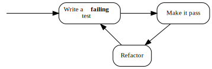
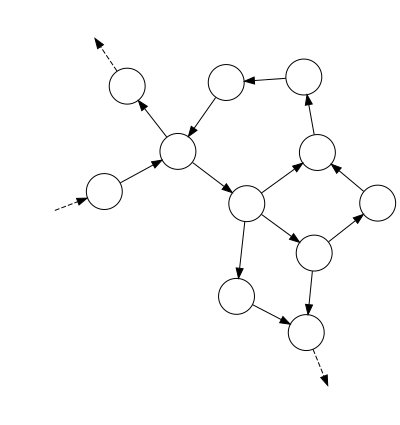
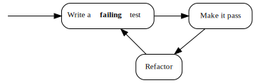

Dedications
Ad Deum qui laetificat iuventutem meam.
To my beloved wife Monika.
Thanks!
I would like to thank the following people (listed alphabetically by name) for valuable feedback, suggestions and other contributions:
- Donghyun Lee
- Daniel Żołopa
- Michael Whelan
- Reuven Yagel
- Sławomir Pająk
Part 1: Just the basics
This is a part where I introduce the basic TDD philosophy and practices (as well as some advanced ones) without going much into object orientation and how to do TDD for systems where multiple objects collaborate together (which is a topic of Part 2).
So, for the most chapters of this part, I will be giving you examples where single object (plus some small ones like strings etc.) is exercised to slowly introduce some concepts in an easy to grasp manner.
After reading part 1, you will be able to quite effectively develop classes that have no dependencies on other classes (and on operating system resources).
Motivation - the first step to learning TDD
So, you want to learn TDD, huh? First off, let me ask a question ‘why?’.
I want to tell you a story - few years ago, I had an apprentice, who wanted to learn TDD as well. We started working on a small project together for him to grasp the necessary skills through practice, with me sitting next to him, providing guidance. He showed up three, four times, then he resigned, having ‘more urgent things’ and ‘no time’. Since then, he did not progress in TDD at all. Did he really want to learn?
See, sometimes people don’t really want to learn something or don’t want so much as to dedicate the necessary time and resources to this. Sometimes they just think they need to do it for whatever reasons - getting promotion at work, gaining a certificate, add something to CV or just ‘stay up to date’ with recent hypes, one of them being Test-Driven Development.
Others want to learn TDD for reasons they themselves made up. Knowing that TDD is valued and praised by others, they draw conclusions that it has to be good. Why is that so? Err… maybe… “the code will be more tested”? Or… ekhem… “the network of tests will be tighter”? And why do Test-First? Well… hmm… “to ensure tests are written for everything”? While these statements might be partially true, they don’t even touch the essence of the “why” of TDD, and quickly turn into something like: “I don’t really need TDD, because I need tests that give me confidence on broader scope” or: “Why do I need unit tests when I already have integration tests, smoke tests, sanity tests, exploration tests…?”. Then TDD gets abandoned, before actually ever being achieved in the first place.
You need to be highly motivated on this one. If you are not, hey, I heard the new series of Game Of Thrones is on TV, why don’t you check it out instead? Ok, I’m just teasing, however, as some say, TDD is “easy to learn, hard to master” (don’t actually know who said it first, I searched the web and found it in few places where none of the writers gave credit to anyone else for it, so I decided just to mention that I’m not the one that coined this description) , so without some guts to move on, it will be hard.
How TDD feels like
Me and my brother liked to play video games in our childhood - one of the most memorable being Tekken 3 - a Japanese tournament beat’em up for Sony Playstation. To finish the game with all warriors, unlock all hidden characters, mini-games etc. took about a day. Some could say the game had nothing to offer since then. Why then did we spend over a year on it?

It is because each fighter in the game had a lot of combos, kicks and punches that could be mixed in a variety of ways. Some were only usable in some situations, others were something you could throw at your opponent almost anytime without a big risk of being exposed to counterattacks. You could side-step to evade enemy’s attacks and, most of all, you could kick another fighter up in the air where they could not block your attacks and you were able to land some nice attacks on them before they fell down. These in-the-air techniques were called “juggles”. There were magazines that published a list of new possible juggles each month and the hype stayed in the gaming community for well over a year.
Yes, Tekken was easy to learn - you could put one hour into training the core moves of a character and then be able to “use them”, but what made you a great fighter was the experience and knowledge on which techniques were risky or not, which ones could be used in which situations, which ones, if used one after another, gave the opponent little chance to counterattack etc. No wonder that soon, many tournaments sprang, where players could clash for glory, fame and rewards. Even today, you can watch some of the matches on youtube.
TDD is like Tekken. You have probably heard the mantra “red-green-refactor” or the general advice “write your test first, then the code”, maybe you even did some experiments on your own where you were trying to implement a bubble-sort algorithm or other simple stuff by starting with a test. But that is all like practicing Tekken by trying out each move on its own on dummy opponent, without the context of real-world issues that make the fight really challenging. And while I think such exercises are (somewhat) useful, you need to understand the bigger picture.
Some people I talk with about TDD sum up what I say to them as: “That is really demotivating - there are so many things I have to watch out for that it makes me never want to start!”. Easy, don’t panic - remember the first time you tried to ride a bike - you must have been really far back then from knowing traffic regulations and following road signs, but that did not really keep you away, did it? I myself found TDD very exciting. Some guys my age already think they know all about coding, are bored with it and cannot wait until they move to management or requirements or business analysis, but hey! I have a new technique that makes my coding career challenging again! And it’s not something I can use only when I pay to Microsoft or Oracle or anybody else - it’s quite portable, making me a better developer overall!
Student
You have started travelling the way of masters with conviction, determination and pride.
The three most essential tools
Ever watched Karate Kid, either the old version or the new one? The thing they have in common is that when the kid starts learning Karate (or Kung-Fu) from his master, he is given a basic, repetitive task (like taking off a jacket, and putting it on again), not knowing yet where it would lead him. Or look at the first Rocky film (yeah, the one starring Sylvester Stallone), where Rocky was chasing a chicken in order to train agility.
When I first tried to learn how to play guitar, I found two advices on the web: the first was to start by mastering a single, difficult song. The second was to play with a single string, learn how to make it sound in different ways and try to play some melodies by ear just with this one string. Do I have to tell you that the second advice worked better?
Honestly, I could dive right into the core techniques of TDD, but this would be like putting you on a ring with a demanding opponent - you would most probably be discouraged before gaining the necessary skills. So, instead of explaining how to win a race, in this chapter we will take a look at what shiny cars we will be driving.
In other words, I will give you a brief tour of the three most essential tools we will be using throughout this book.
Our shiny tools
A disclaimer - in this chapter, I will oversimplify some things just to get you up and running without getting into the philosophy of TDD yet (think: physics lessons in primary school). Do not worry about it :-), we will fix that in the coming chapters!
xUnit framework
The first and most essential tool we are going to use is an xUnit framework.
Let us assume that our application looks like this:
public static void Main(string[] args)
{
try
{
int firstNumber = Int32.Parse(args[0]);
int secondNumber = Int32.Parse(args[1]);
var result =
new Multiplication(firstNumber, secondNumber).Perform();
Console.WriteLine("Result is: " + result);
}
catch(Exception e)
{
Console.WriteLine("Addition failed because of: " + e);
}
}
Now, let us assume we want to check whether it produces correct results. The most obvious way would be to invoke the application from command line with some exemplary arguments, check the output to the console and compare it with what we expect to see. Such session could look like this:
C:\MultiplicationApp\MultiplicationApp.exe 3 7
21
C:\MultiplicationApp\
As you can see, the application produced a result of 21 for multiplication of 7 by 3. This is correct, so we assume the test is passed. But what if we produced an application that additionally does addition, subtraction, division, calculus etc.? How many times would we have to invoke the application to make sure every operation works correct?
But wait, we are programmers, right? So we can write programs that can do this for us! In order to do this, we will create a second application that will also use the Multiplication class, but in a little different way:
public static void Main(string[] args)
{
var multiplication = new Multiplication(3,7);
var result = multiplication.Perform();
if(result != 21)
{
throw new Exception("Failed! Expected: 21 but was: " + result);
}
}
Sounds easy, right? Let us take another step and extract the result check into something more reusable - after all, we will be adding division in a second, remember? So here goes:
public static void Main(string[] args)
{
var multiplication = new Multiplication(3,7);
var result = multiplication.Perform();
AssertTwoIntegersAreEqual(expected: 21, actual: result);
}
public static void AssertTwoIntegersAreEqual(
int expected, int actual)
{
if(actual != expected)
{
throw new Exception(
"Failed! Expected: " + expected + " but was: " + actual);
}
}
Note that I started the name of the method with “Assert” - we will get back to the naming soon, for now just assume that this is just a good name for the method. Let us take one last round and put the test into its own method:
public static void Main(string[] args)
{
Multiplication_ShouldResultInAMultiplicationOfTwoPassedNumbers();
}
public void
Multiplication_ShouldResultInAMultiplicationOfTwoPassedNumbers()
{
//Assuming…
var multiplication = new Multiplication(3,7);
//when this happens:
var result = multiplication.Perform();
//then the result should be…
AssertTwoIntegersAreEqual(expected: 21, actual: result);
}
public static void AssertTwoIntegersAreEqual(
int expected, int actual)
{
if(actual != expected)
{
throw new Exception(
"Failed! Expected: " + expected + " but was: " + actual);
}
}
And we are finished. Now if we need another test, e.g. for division, we can just add a new method call to the Main() method and implement it. When implementing it, we can reuse the AssertTwoIntegersAreEqual() method, since the check for division would be analogous.
As you can see, we can easily write automated checks like this, but this way has some disadvantages:
- Every time we add new test, we have to maintain the
Main() method, adding a call to the new test. If you forget to add such a call, the test will never be run. At first it isn’t a big deal, but as soon as we have dozens of tests, it will get really hard to notice.
- Imagine your system consists of more than one application - you would have some problems trying to gather summary results for all of the applications that your system consists of.
- A need will very quickly arise to write a lot of other checks like the existing
AssertTwoIntegersAreEqual() - this one compares two integers for equality, but what if you wanted to checka different condition, e.g. that one integer is greater than another? What if you wanted to check equality not for integers, but for characters, strings, floats etc.? What if you wanted to check some conditions on collections, e.g. that a collection is sorted or that all items in the collection are unique?
- Given that a test fails, it would be hard to navigate from the commandline output to the line in your IDE. Would it not be easier if you could click on the call stack to take you immediately to the code where the failure took place?
For these and other reasons, automated testing tools were born. Those testing tools are generally referenced to as xUnit family, because many of them have names that end with the word “Unit”, e.g. CppUnit (for C++), JUnit (for Java), NUnit (for .NET) etc.
To be honest, I cannot wait to show you how the test we wrote just a minute ago looks like when xUnit framework is used, however, before I do this, I would like to recap quickly what we have in our brute-force naive approach to writing automated tests:
- The
Main() method serves as a Test List
- The
Multiplication_ShouldResultInAMultiplicationOfTwoPassedNumbers() method is a Test Method
- The
AssertTwoIntegersAreEqual() method is an Assertion
Quite to our joy, those three elements are present in xUnit frameworks as well. To illustrate it, here is (finally!) the same test we wrote, but with an xUnit framework (this one is called XUnit.Net):
[Fact] public void
Multiplication_ShouldResultInAMultiplicationOfTwoPassedNumbers()
{
//Assuming…
var multiplication = new Multiplication(3,7);
//when this happens:
var result = multiplication.Perform();
//then the result should be…
Assert.Equal(21, result);
}
As you can see, it looks like two methods that we previously had are gone now and the test is the only thing that is left. Well, to tell you the truth, they are not gone - it is just that the framework handles these for us. Let us reiterate through the three elements of the previous version of the test that I promised would be there after the transition to xUnit framework:
- Test List is now created automatically by the framework from all methods marked with a [Fact] attribute, so no need to maintain one or more central lists. Thus, the
Main() method is gone.
- The Test Method is here and looks almost the same as the last time.
- The Assertion took the form of a call to static
Assert.Equal() method - the xUnit.NET framework is bundled with a wide range of pre-made assertions for your convenience. Of course, no one stops you from writing your own custom one if you do not find what you are looking for in a default set.
Phew, I hope I made the transition quite painless for you. Now the last thing to add - as there is not Main() method anymore in the last example, you surely must wonder how we run those tests, right? Ok, the last big secret unveiled - we use an external application for this (we will refer to it using a term Test Runner) - we tell it which assemblies to run and it loads them, runs them, reports results etc. It can take various forms, e.g. it can be a console application, a GUI application or a plugin to our IDEs. Here is an example of a stand-alone runner for xUnit.NET framework:

Sprinter
You sure know how to run your tests. Automatically!
Mocking framework
Mocking frameworks are libraries that automate runtime creation of objects (called “mocks”) that adhere to specified interface. Aside from the creation itself, the frameworks provide an API to configure our mocks on how they behave when certain methods are called on them and to let us inspect which calls they received.
Mocking frameworks are not as old as xUnit frameworks and were not present in TDD since the very beginning. As you might be wondering why on earth do we need something like this, I will let you in on a secret: they were born with a goal of aiding a specific approach to object oriented design in mind. This kind of design is what TDD supports as you will soon experience.
For now, however, let us try to keep things easy. I will defer explaining the actual rationale for mocking frameworks until later and instead give you a quick example where you can see them in action. Ready? Let us go!
Let us pretend that we have the following code for adding new set of orders for products to a database and handling exceptions (by writing a message to a log) when it fails:
public class OrderProcessing
{
//other code…
public void Place(Order order)
{
try
{
this.orderDatabase.Insert(order);
}
catch(Exception e)
{
this.log.Write("Could not insert an order. Reason: " + e);
}
}
//other code…
}
Now, imagine we need to test it - how do we do it? I can already see you shaking your head and saying: “Let us just create this database, invoke this method and see if the record is added properly”. In such case, the first test would look like this:
[Fact]
public void ShouldInsertNewOrderToDatabase()
{
//GIVEN
var orderDatabase = new MySqlOrderDatabase();
orderDatabase.Connect();
orderDatabase.Clean();
var orderProcessing = new OrderProcessing(orderDatabase, new FileLog());
var order = new Order(
name: "Grzesiek",
surname: "Galezowski",
product: "Agile Acceptance Testing",
date: DateTime.Now,
quantity: 1);
//WHEN
orderProcessing.Place(order);
//THEN
var allOrders = orderDatabase.SelectAllOrders();
Assert.Contains(order, allOrders);
}
As you see, at the beginning of the test, we are opening a connection and cleaning all existing orders (more on that shortly!), then creating an order object, inserting it into a database and then querying the database to give us all of the held instances. At the end, we make an assertion that the order we tried to insert must be inside all orders in a database.
Why do we clean up the database? Remember a database is a persistent storage, so if we did not clean it up and run this test again, the database may have already contained the item (maybe another test already added it?) and would probably not allow us to add the same item again. Thus, the test would fail. Ouch! It hurts so bad, because we wanted our tests to prove something works, but looks like it can fail even when the logic is coded correctly. What use is such a test if it cannot reliably provide the information we demand from it (whether the implemented logic is correct or not)? Thus, we clean up before each run to make sure the state of the persistent storage is the same every time we run this test.
So, got what you want? Well, I did not. Personally, I would not go this way. There are several reasons:
- The test is going to be slow. It is not uncommon to have more than thousand tests in a suite and I do not want to wait half an hour for results every time I run them. Do you?
- Everyone running this test will have to set up a local database on their machine. What if their setup is slightly different than yours? What if the schema gets outdated - will everyone manage to notice it and update schema of their local databases accordingly? Will you re-run your database creation script only to ensure you have got the latest schema available to run your tests against?
- There may not be an implementation of the database engine for the operating system running on your development machine if your target is an exotic or mobile platform.
- Note that this test you wrote is only one out of two. You will have to write another one for the scenario where inserting an order ends with exception. How do you setup your database in a state where it throws an exception? It is possible, but requires significant effort (e.g. deleting a table and recreating it after the test for other tests that might need the table to run correctly), which may lead you to a conclusion that it is not worth to write such tests at all.
Now, let us try something else. Let us assume that our database works OK (or will be tested by black-box tests) and the only thing we want to test is our implementation. In this situation, we can create fake object, which is an instance of another custom class that implements the same interface as MySqlOrderDatabase, but does not write to a database at all - it only stores the inserted records in a list:
public class FakeOrderDatabase : OrderDatabase
{
public Order _receivedArgument;
public void Insert(Order order)
{
_receivedArgument = order;
}
public List<Order> SelectAllOrders()
{
return new List<Order>() { _receivedOrder; };
}
}
Now, we can substitute the real implementation of order database with the fake instance:
[Fact] public void
ShouldInsertNewOrderToDatabase()
{
//GIVEN
var orderDatabase = new FakeOrderDatabase();
var orderProcessing = new OrderProcessing(orderDatabase, new FileLog());
var order = new Order(
name: "Grzesiek",
surname: "Galezowski",
product: "Agile Acceptance Testing",
date: DateTime.Now,
quantity: 1);
//WHEN
orderProcessing.Place(order);
//THEN
var allOrders = orderDatabase.SelectAllOrders();
Assert.Contains(order, allOrders);
}
Note that we do not clean the fake database object, since we create it as fresh each time the test is run. Also, the test is going to be much quicker now. But, that is not the end! We can easily write a test for an exception situation. How do we do it? Just make another fake object implemented like this:
public class ExplodingOrderDatabase : OrderDatabase
{
public void Insert(Order order)
{
throw new Exception();
}
public List<Order> SelectAllOrders()
{
}
}
Ok, so far so good, but the bad is that now we have got two classes of fake objects to maintain (and chances are we will need even more). Any method or argument added will need to be propagated to all these objects. We can spare some coding by making our mocks a little more generic so their behavior can be configured using lambda expressions:
public class ConfigurableOrderDatabase : OrderDatabase
{
public Action<Order> doWhenInsertCalled;
public Func<List<Order>> doWhenSelectAllOrdersCalled;
public void Insert(Order order)
{
doWhenInsertCalled(order);
}
public List<Order> SelectAllOrders()
{
return doWhenSelectAllOrdersCalled();
}
}
Now, we do not have to create additional classes for new scenarios, but our syntax gets awkward. See for yourself how we configure the fake order database to remember and yield the inserted order:
var db = new ConfigurableOrderDatabase();
Order gotOrder = null;
db.doWhenInsertCalled = o => {gotOrder = o;};
db.doWhenSelectAllOrdersCalled = () => new List<Order>() { gotOrder };
And if we want it to throw an exception when anything is inserted:
var db = new ConfigurableOrderDatabase();
db.doWhenInsertCalled = o => {throw new Exception();};
Thankfully, some smart programmers created frameworks that provide further automation in such scenarios. One of them is called NSubstitute and provides an API in a form of extension methods (that is why it might seem a bit magical at first. Do not worry, you will get used to it).
Using NSubstitute, out first test can be rewritten as such:
[Fact] public void
ShouldInsertNewOrderToDatabase()
{
//GIVEN
var orderDatabase = new Substitute.For<OrderDatabase>();
var orderProcessing = new OrderProcessing(orderDatabase, new FileLog());
var order = new Order(
name: "Grzesiek",
surname: "Galezowski",
product: "Agile Acceptance Testing",
date: DateTime.Now,
quantity: 1);
//WHEN
orderProcessing.Place(order);
//THEN
orderDatabase.Received(1).Insert(order);
}
Note that we do not need the SelectAllOrders() method. If no one except this test needs it, we can delete it and spare some more maintainability trouble. The last line of this test is actually a camouflaged assertion that checks whether Insert method was called once with order object as parameter.
I will get back to mocks, since, as I said, there is a huge philosophy behind them and we have only scratched the surface here.
Pretender
You have managed to use a mock instead of a real object in unit test!
Anonymous values generator
Look at the test in the previous section. Does it not trouble you that we fill the order object with so many values that are totally irrelevant to the test logic itself? They actually hinder readability of the test. Also, they make us believe that the tested object really cares what these values are, although it does not (the database does, but we already got rid of it from the test). Let us move it to a method with descriptive name:
[Fact] public void
ShouldInsertNewOrderToDatabase()
{
//GIVEN
var orderDatabase = new Substitute.For<OrderDatabase>();
var orderProcessing = new OrderProcessing(orderDatabase, new FileLog());
var order = AnonymousOrder();
//WHEN
orderProcessing.Place(order);
//THEN
orderDatabase.Received(1).Insert(order);
}
public Order AnonymousOrder()
{
return new Order(
name: "Grzesiek",
surname: "Galezowski",
product: "Agile Acceptance Testing",
date: DateTime.Now,
quantity: 1);
}
Now that is better. Not only did we make the test shorter, we also provided a hint to the test reader that the actual values used to create an order do not matter from the perspective of tested order processing logic, hence the name AnonymousOrder().
By the way, would it not be nice if we did not have to provide the anonymous objects ourselves, but rely on another library to generate them for us? Susprise, surprise, there is one! It is called Autofixture. It is an example of an anonymous values generator (although its creator likes to say that it is an implementation of Test Data Builder pattern, but let us skip this discussion here). After refactoring our test to use AutoFixture, we arrive at the following:
[Fact] public void
ShouldInsertNewOrderToDatabase()
{
//GIVEN
var orderDatabase = new Substitute.For<OrderDatabase>();
var orderProcessing = new OrderProcessing(orderDatabase, new FileLog());
var order = any.Create<Order>();
//WHEN
orderProcessing.Place(order);
//THEN
orderDatabase.Received(1).Insert(order);
}
private Fixture any = new Fixture();
Nice, huh? AutoFixture has a lot of advanced features, but personally I am conservative and wrap it behind a static class called Any:
public static class Any
{
private static any = new Fixture();
public static T ValueOf<T>()
{
return any.Create<T>();
}
}
In the next chapters, you will see me using a lot of different methods from the Any type. The more you use this class, the more it grows with other methods for creating customized objects. For now, however, let us stop here.
Anonymous
The values you use in your unit tests move like a shadow, unnoticed by anyone and until it is really necessary.
Summary
In this chapter, I tried to show you the three essential tools which we will be using in this book and which, when mastered, will make your test-driven development smoother. If this chapter leaves you with insufficient justification for their use, do not worry - we will dive into the philosophy behind them in the coming chapters. For now, I just want you to get familiar with the tools themselves and their syntax. Go on, download these tools, launch them, try to write something simple with them. You do not need to understand their full purpose yet, just go out and play :-).
Equipped
You are now able to understand most of the code examples throughout this book!
It is not a test
Up to now, I was cheating on you. I told you that the little executable snippets of code are ‘tests’ and that they’re here to ‘check’ or ‘verify’ something. Now it is time to reveal the truth.
When a test becomes something else
I studied in Łódź, a large city in the center of Poland. As probably all other students in all other countries, we have had lectures, exercises and exams. The exams were pretty hard, especially considered that my computer science group was on the faculty of electronic and electric engineering, so we had to grasp a lot of classes that did not have anything to do with programming, for instance electrotechnics, solid-state physics or electronic and electrical metrology.
Knowing that the exams were difficult and that it was hard to learn everything during preparation, the lecturers would give us exemplary exams from previous years. The questions were different than during actual exams, but the structure and types of questions asked (practice vs. theory etc.) was similar. We would usually get these exemplary questions before we started learning really hard (which was usually at the end of semester). Guess what happened then? As you might suspect, we did not use the tests we received just to ‘verify’ or ‘check’ our knowledge after we finished learning. Those tests were actually the first thing we went to before even starting to learn. Why was that so? What use were the tests when we knew we would not know most of the answers?
I guess my lecturers would disagree with me, but I find it quite amusing that what we were really doing back then was ‘Lean’. Lean is an approach where, among others, there is a rigorous emphasis on eliminating waste. Every feature or product that is produced while not being needed by anyone is considered waste. That is because if something is not needed, there is no reason to assume it will ever be needed. In such case the entire feature or product is a waste - it has no value. Even if it WILL be ever needed, it will require some rework anyway to fit the real customer needs. In this case, the initial amount of work that went into the parts of solution that had to be replaced by another parts anyway is a waste - it never brought any money (I am not talking about such things as customer demos, but finished, polished features or products).
So, in order to eliminate waste, there is huge pressure nowadays to “pull features from demand” instead of “pushing them” into the product. In other words, every feature is there to satisfy concrete need. If not, the effort is considered wasted and the money drown.
Going back to the exams, why the approach of first looking through the exemplary tests can be considered ‘lean’? That is because, when we treat passing an exam as our goal, then everything that does not put us closer to this goal is considered a waste. Let us suppose the exam is theory only - why then practice the exercises? It would probably pay off a lot more to study theoretical side of the topics. Such knowledge could be obtained from those exemplary tests. So, the tests were a kind of specification of what was needed to pass the exam, letting us pull the value (i.e. our knowledge) from demand (information obtained from a realistic tests) rather that pushing it from implementation (i.e. learning everything in a course book chapter after chapter).
So the tests became something else. They proved very valuable before the ‘implementation’ (i.e. learning for the exam) because:
- they helped us focus on what was needed to reach our goal
- they brought our attention away from what was not needed to reach our goal
That was the value of a test before learning. Note that the tests we would usually receive were not exactly what we would encounter at the time of exam, so we still had to guess. Still, the role of a test as specification of a need was already visible.
Taking It To The Software Development Land
I chose this lengthy metaphor to show you that ‘test’ is really another way of specifying a requirement or a need and that it is not something that is counter-intuitive - it occurs in our everyday lives. This is also true in software development. Let us take the following ‘test’ and see what kind of needs it specifies:
var reporting = new ReportingFeature();
var anyPowerUser = Any.Of(Users.Admin, Users.Auditor);
Assert.True(reporting.CanBePerformedBy(anyPowerUser));
(In this example, we used Any.Of() method that returns any enumeration value from the specified list. Here, we say “give me a value that is either Users.Admin or Users.Auditor“.)
Let us look at those (only!) three lines of code, imagining that the production code that makes this ‘test’ pass does not exist yet. What can we learn from these three lines about what the code needs to supply? Count with me:
- We need a reporting feature
- We need to support a notion of users and privileges
- We need to support a domain concept of power user, who is either an administrator or an auditor
- Power users will need to be privileged to use the reporting feature (note that it does not specify which other users should or should not be able to use this feature - we would need a separate ‘test’ for that).
Also, are already after the phase of designing an API that will fulfill the need. Don’t you think it is pretty much information about the application from just three lines of code?
Lean & Mean
You now see some connotations between Test-Driven Development and Lean movement. There are more if you are interested, so be sure to pick up a good read bout lean software development!
A Specification Instead of a Test Suite
I hope that you can see now that what we called ‘a test’ is really a kind of specification. The discovery is very recent, so there isn’t a clear terminology on it yet. Some like to call the process of using tests as specifications: Specification By Example, to say that the tests are really examples that help specify and clarify the behavior of developed part of functionality. The terminology is still not rock-solid, so you might encounter different naming for different things. For example, a ‘test’ is often referred to as ‘spec’, or an ‘example’, or a ‘behavior description’, or a ‘specification statement’ or a ‘fact about the developed system’ (the xUnit.NET framework marks each ‘test’ with a [Fact] attribute, suggesting that by writing it, we are stating a single fact about developed code. By the way, xUnit.NET also allows us to state ‘theories’ about our code, but let us leave it for now).
The time has come to make a deal: I will establish some naming conventions for this book to be consistent, but leave you with the freedom to follow your own if you so desire. Let us agree that for the sake of this book:
- Specification Statement (or simply Statement, starting with capital letter)
- will be used instead of ‘test’ or ‘test method’
- Specification (or simply Spec), also starting with capital letter
- will be used instead of ‘test suite’ or ‘test list’
- Unfulfilled Statement
- will be used instead of ‘failing test’
- Fulfilled Statement
- will be used instead of ‘passing test’
From time to time, I will refer back to the ‘traditional’ terminology, because it is better established and you’ve probably heard some terms already and may wonder how it should be understood in context of thinking of tests as specification.
From your experience, you may know paper or word specifications, written in plain English or other spoken language. Our specification is different than these specifications in at least few ways:
- it is not written fully up-front (more on this in the next chapters).
- it is executable - you can run it to see whether the code adheres to the specification or not.
- it is written in source code rather than in spoken language - which is both good (less room for misunderstanding - source code is the most formal and structured way of writing specifications) and bad (great care must be taken to keep the specification readable).
Enlightened
You are starting to see Test-Driven Development in a new light - not as a testing technique, but as a mean to specify the behaviors of the code under development.
Statement-First programming
What is The Point of Writing Specification After The Fact?
In the last chapter, I said that in TDD a ‘test’ takes another role - one of a statement being a part of a specification. If we put things this way, then the whole controversial concept of “writing a test before the code” does not pose a problem at all. Quite the contrary - it only seems natural to specify what we are going to write before we attempt to write it. Does the other way round even make sense? A specification written after completing the implementation is nothing more than an attempt at documenting the existing solution. Sure, such attempts can provide some value when done as a kind of reverse-engineering (i.e. writing specification for something that was implemented long ago and we do not really know the exact business rules or policies, which we discover as we document the existing solution) - it has an excitement of discovery in it, but doing it just after we, ourselves, made all the decisions seems like a waste of time, not to mention that it is dead boring (Do not believe me? Try implementing a simple calculator app and the write specification for it just after it is implemented and working). Anyway, specifying how something should work after the fact can hardly be considered creative.
Oh, and did I tell you that without a specification of any kind we do not really know whether we are done implementing our changes or not (because in order to know it, we need to compare the implemented functionality to ‘something’, even if this ‘something’ is only in the customer’s head).
Another thing I mentioned in the previous chapter was that one of the differences between a textual specification and our Specification consisting of executable Statements is that, although the code follows the Specification, we do not write our Specification fully up-front. The usual sequence is to specify a bit first and then code a bit, then repeat one Statement at a time. When doing TDD, we are traversing repeatedly through few phases that make up a cycle. We like these cycles to be short, so that we can get a quick feedback. Being able to get this quick feedback is essential, because it allows us to move forward with confidence that what we already have works as we intended. Also, it allows us to use the knowledge we gained in the previous cycle to make the next cycle more efficient (if you do not believe me that quick feedback is good, ask yourself a question: “how many times a day do I compile the code I work on?”).
Reading so much about cycles, it is probably no surprise to you that the traditional illustration of the TDD process is modeled visually as a circle-like flow:

Note that the above form uses the traditional terminology of TDD, so before I explain the steps, I will translate it to use our terms of Specification and Statements:

The second version seems more like common sense than the first one - specifying how something should behave before putting that behavior in place is way more intuitive than testing something that does not exist.
Anyway, these three steps demand some explanation. In the coming chapters, I will give you some examples of how this process works in practice and introduce an expanded version, but in the meantime, its sufficient to say that:
- Write an unfulfilled Statement
- means that the Statement evaluates to false (it shows on the test list as unfulfilled - in most xUnit frameworks, it will be marked with red color)
- Fulfill it
- means that we write just enough code to fulfill the Statement (in most xUnit frameworks, the fulfilled Statement will be marked with green color). Later in the course of the book, you will see how small can be “just enough”
- Refactor
- is a step that I have silently discarded so far (and will do so for at least few next chapters. Do not worry, we will get back to it eventually). Basically, it boils down to using the safety net of executable specification we already have in place to safely enhance the quality of the covered code while all mistakes we make in the process are quickly discovered by the running Specification.
By the way, this process is sometimes referred to as “Red-Green-Refactor”. I am just mentioning it here for the record - I am not planning to use this term further in the book.
The Benefit of Failure
Look again at the drawing with TDD process - can you spot a single word I underlined? Yes, it is unfulfilled. It means that when you write a Statement, you have to evaluate it (i.e. run it) and watch it fail its assertions before providing implementation that makes this Statement true. Why is that so important? Is it not just enough to write the Statement first? Why run it and watch it fail?
There are multiple reasons and I will try to outline few of them briefly.
You do not know whether the Statement can ever be false until you see it evaluate to false
Every accurate Statement (do I have to tell you that such Statements are what we are interested in?) fails when it isn’t fulfilled and passes when it is. That is one of the main reasons we write it - to receive this feedback. Also, after being fulfilled, the Statement becomes a part of the executable specification and starts failing as soon as the code stops fulfilling it (e.g. as a result of mistake made during code rework). When your run a Statement after it is implemented and it is evaluated as true, how do you know whether it really describes a need accurately? You did not ever watch it fail, so how do you know it ever will?
The first time I encountered this argument (it was before I started thinking of unit tests as executable specification), it quickly raised my self-defense mechanism: “seriously?” - I thought - “I am a wise person, I know what I am writing. If I make my unit tests small enough, it is self-evident that I am describing the correct behavior. This is paranoid”. However, life quickly verified my claims and I was forced to withdraw my arguments. Let me describe, from my experience, three ways (there are more, I just forgot the rest :-D) one can really put in a Statement that is always evaluated as true, regardless of the code being correct or not (i.e. a Statement that cheats you into thinking it is fulfilled even when it is not):
1. Accidental omission of adding a Statement to Specification.
However funny this may sound, it happened to me few times. The example I am going to give is from C#, but almost every xUnit framework in almost every language has some kind of mechanism of marking methods as Statements, whether by attributes (C#, e.g. xUnit.Net’s Fact attribute) or annotations (Java) or with macros (C and C++) or by inheriting from common class, or just a naming convention.
Let us take xUnit.Net as an example. As I stated previously, In xUnit.Net, to turn a method into a Statement, you mark it with [Fact] attribute the following way:
public class CalculatorSpecification
{
[Fact]
public void ShouldDisplayAdditionResultAsSumOfArguments()
{
//...
}
}
Now, imagine that you are writing this Statement post-factum as a unit test in an environment that has, let us say, more than thirty Statements - you have written the code, now you are just creating a test after test “to ensure” (as you see, this is not my favorite reason for writing unit tests) the code works. Code, test - pass, test - pass, test - pass. You almost always evaluate your code against the whole Specification, since it is usually easier than selecting what to evaluate each time, plus, you get more confidence this way that you did not break by mistake something that is already working. So, this is really: Code, Test - all pass, test - all pass, test - all pass… Hopefully, you use some kind of snippets mechanism for creating new Statements, but if not (and many do not actually do this), once in a while, you do something like this:
public class CalculatorSpecification
{
//... some Statements here
//oops… forgot to copy-paste the attribute!
public void ShouldDisplayZeroWhenResetIsPerformed()
{
//...
}
}
And you do not even notice that this will not be evaluated with the rest of the Specification, because it already consists of so many Statements that it is almost irrational to search for your added Statement in the list and make sure it is there each time. Also, note that the fact that you omitted the addition, does not disturb your work flow: test - all pass, test - all pass, test - all pass… In other words, your process does not give you any feedback on your mistake. So, what you end up is a Statement that not only will never be false - it will never be evaluated.
How does treating tests as Statements and evaluating them before making them true help here? Because then, a Statement that starts off being evaluated as true is what DOES disturb your work flow. In TDD, the work flow is: Statement - unfulfilled - fulfilled (ok, and refactor, but for the sake of THIS discussion, it does not matter so much), Statement - unfulfilled - fulfilled, Statement - unfulfilled - fulfilled… So every time you fail to see the “unfulfilled” stage, you get feedback from your process that something suspicious is happening. This lets you investigate and, if necessary, fix the situation at hand.
2. Misplacing mock setup
Ok, this may sound even funnier (well, honestly, most mistakes sound funny), but it also happened to me a couple of times, so it makes sense to mention it. The example I am going to show uses manual mocks, but this can happen with dynamic mocks as well, especially if you are in a hurry.
Let us take a look at the following Statement saying that setting a value higher than allowed to a field of a frame should produce error result:
[Fact]
public void ShouldRecognizeTimeSlotAboveMaximumAllowedAsInvalid()
{
//GIVEN
var frame = new FrameMock(); //manual mock
var validation = new Validation();
var timeSlotAboveMaximumAllowed = TimeSlot.MaxAllowed + 1;
//WHEN
var result = validation.PerformForTimeSlotIn(frame);
frame.GetTimeSlot_Returns
= timeSlotAboveMaximumAllowed;
//THEN
Assert.False(result.Passed);
Assert.Equal(
ValidationFailureReasons.AboveAcceptableLimit,
result.Reason);
}
Note how the method PerformForTimeSlotIn(), which triggers the specified behavior is accidentally called BEFORE the mock is actually set up and the set up return value is never taken into account. By some strange coincidence, this error did not alter the expected end result so we did not even notice. It sometimes turns out like this, most often in case of various boundary values (nulls etc.).
3. Using static data inside production code
Once in a while, you have to jump in and add some new Statements to some class Specification and some logic to the class itself. Let us assume that the class and its existing specification was written by someone else. Imagine this code is a wrapper around your product XML configuration file. You decide to write your Statements AFTER applying the changes (“well”, you can say, “I am all protected by the Specification that is already in place, so I can make my change without risking regression, then just test my changes and it is all good…”).
So, you start writing the new Statement. The Specification class already contains a field member like this:
public class XmlConfigurationSpecification
{
XmlConfiguration config = new XmlConfiguration(xmlFixtureString);
//...
//...
What it does is to set up an object used by every Statement. So, each Statement uses a config object initialized with the same xmlConfiguration string value. The string is already pretty huge and messy, since it was made to contain what is required by all existing Statements. You need to write tests for is a little corner case that does not need all this crap that is inside this string. So, you decide to start fresh and create a separate object of XmlConfiguration class with your own, minimal string. Your Statement begins like this:
string customFixture = CreateMyOwnFixtureForThisTestOnly();
var configuration = new XmlConfiguration(customFixture);
...
And it passes - cool… not. Ok, what is wrong with this? Nothing big, unless you read the source code of XmlConfiguration class carefully. Inside, you can see, how the xml string is stored:
private static string xmlText; //note the static keyword!
What the…? Well, well, here is what happened: the author of this class coded in a small little optimization. He thought: “In this app, the configuration is only modified by members of the support staff and to do it, they have to shut down the system, so, there is no need to read the XML file every time an XmlConfiguration object is created. I can save some CPU cycles and I/O operations by reading it only once when the first object is created. Another created object will just use the same XML!”. Good for him, not so good for you. Why? Because (unless your Statement is evaluated prior to being fulfilled), your custom xml string will never actually be used!
“Test-After” ends up as “Test-Never”
I will ask this question again: ever had to write a requirement or design document for something that you already implemented? Was it fun? Was it valuable? Was it creative? No, I do not think so. The same is with our executable specification. After we write the code, we have little motivation to specify what is already written - some of the pieces of code “we can just see are correct”, other pieces “we already saw working” when we copied our code over to our deployment machine and ran few sanity checks… The design is ready… Specification? Maybe next time…
Another reason might be time pressure. Let us be honest - we are all in a hurry, we are all under pressure and when this pressure is too high, it triggers heroic behaviors in us, especially when there is a risk of not making it with the sprint commitment. Such heroic behavior usually goes by the following rules: drop all the “baggage”, stop learning and experimenting, revert to all of the old “safe” behaviors and “save what we can!”. If Specification is written at the end, it is often sacrificed on the altar of making it with the commitment, since the code is already written, “and it will be tested anyway by real tests” (box tests, smoke tests, sanity tests etc.). It is quite the contrary when starting with a Statement, where the Statement evaluating to false is a reason to write any code. Thus, if we want to write code, Specification become irremovable part of your development. By the way, I bet in big corporations no one sane ever thinks they can abandon checking in the code to source control, at the same time treating Specification as “an optional addition”.
Not starting from specification leads to waste of time on making objects testable
It so happens, that I like watching and reading Uncle Bob. One day, I was listening to his keynote at Ruby Midwest 2011, called Architecture The Lost Years. At the end, Robert made some digressions, one of them being about TDD. He said that writing unit tests after the code is not TDD. It is a waste of time.
My initial thought was that the comment was only about missing all the benefits that starting with false Statement brings you: the ability to see the Statement fail, the ability to do a clean-sheet analysis etc., however, now I am of opinion that there is more to it. It is something I got from Amir Kolsky and Scott Bain - in order to be able to write maintainable Specification for a piece of code, the code has to have a high level of a quality called testability (we will talk about testability later on, do not worry - for now let us assume that the easier it is to write a Statement for a behavior of a class, the higher testability it has). That does not tell us much about where is the waste I mentioned, does it? To see it, let us see how dealing with testability looks like in Statement-first workflow (let us assume that we are creating new code, not adding stuff to dirty, ugly legacy code):
- Write false Statement (this step ensures that code has high testability)
- Write code to make the Statement true
Now, how does it usually look like when we write the code first (extra steps marked with strong text):
- Write some production code (probably spans few classes until we are satisfied)
- Start writing unit tests
- Notice that unit testing the whole set of classes is cumbersome and unsustainable and contains high redundancy.
- Restructure the code to be able to isolate objects and use mocks (this step ensures that code has high testability)
- Write unit tests
What is the equivalent of the marked steps in Statement-First approach? Nothing! Doing these things is a waste of time! Sadly, this is a waste I see done over and over again.
Practicing what we already learned
And now, a taste of things to come!
- Shang Tsung, Mortal Kombat The Movie
The above quote took place just before a fighting scene in which a nameless warrior jumped at Sub-Zero only to be frozen and broken into multiple pieces upon hitting the wall. The scene was not spectacular in terms of fighting technique or length. Also, the nameless guy did not even try hard - the only thing he did was to jump only to be hit by a freezing ball, which, by the way, he actually saw coming. It looked a lot like the fight was set up only to showcase Sub-Zero’s freezing ability. Guess what? In this chapter, we are gonna do roughly the same thing - set up a fake, easy scenario just to showcase some of the basic TDD elements!
The previous chapter was filled with a lot of theory and philosophy, don’t you think? I really hope you did not fall asleep while reading it. To tell you the truth, we need to grasp much more theory until we are really able to write real-world applications using TDD. To compensate for this somehow, I propose we make a side trip from the trail and try what we already learned on a quick and easy example. As we go through the example, you might wonder how on earth could you possibly write real applications the way we will write our simple program. Do not worry, I will not show you all the tricks yet, so treat it as a “taste of things to come”. In other words, the example will be as close to real world problems as the fight between Sub-Zero and nameless ninja was to real martial arts fight, but will show you some of the elements of TDD process.
Let me tell you a story
Meet Johnny and Benjamin, two developers from Buthig Company. Johnny is quite fluent in programming and Test-Driven Development, while Benjamin is an intern under Johnny’s mentorship and is eager to learn TDD. They are on their way to their customer, Jane, who requested their presence as she wants them to do write a small program for her. Together with them, we will see how they interact with the customer and how Benjamin tries to understand the basics of TDD. Just as you, Benjamin is a novice so his questions may reflect yours. However, if you find anything explained in not enough details, do not worry - in the next chapters, we will be expanding on this material.
Act 1: The Car
Johnny: How do you feel on your first assignment?
Benjamin: I am pretty excited! I hope I can learn some of the TDD stuff you promised to teach me.
Johnny: Not only TDD, but we are also gonna use some of the practices associated with a process called Acceptance Test Driven Development, albeit in a simplified form.
Benjamin: Acceptance Test-Driven Development? What is that?
Johnny: While TDD is usually referred to as a development technique, ATDD is something more of a collaboration method. Both ATDD and TDD have a bit of analysis in them and work very well together as both use the same underlying principles, just on different levels. We will need only a small subset of what ATDD has to offer, so do not get over-excited.
Benjamin: Sure.
Act 2: The Customer
Johnny: Hi, Jane, how are you?
Jane: Thanks, I am fine, how about you?
Johnny: Same here, thanks. So, can you tell us a bit about the software you need us to write?
Jane: Sure. Recently, I bought a new smartphone as a replacement for my old one. The thing is, I am really used to the calculator application that was running on the previous phone and I cannot find it for my current device.
Benjamin: Can't you just use another calculator app? There are plenty of them available to download from the web.
Jane: That is right. I checked them all and none has exactly the same behavior as the one I was using for my tax calculations. You know, the program was like right hand to me and it had some really nice shortcuts that made my life easier.
Johnny: So you want us to reproduce the application to run on your new device?
Jane: Yes.
Johnny: Are you aware that apart from the fancy features that you were using we will have to allocate some effort to implement the basics that all the calculators have?
Jane: Sure, I am OK with that. I am so used to my calculator application so much that if I use something else for more than few months, I will have to pay psychotherapist instead of you guys. Apart from that, writing a calculator app seems like a simple task in my mind, so the cost isn’t going to be overwhelming, right?
Johnny: I think I get it. Let us get it going then. We will be implementing the functionality incrementally, starting with the most essential ones. Which feature of the calculator would you consider the most essential?
Jane: That would be addition of numbers, I guess.
Johnny: Ok, that will be our target for the first iteration. After the iteration, we will deliver this part of functionality for you to try out and give us some feedback. However, before we can even implement addition, we will have to implement displaying digits on the screen as you enter them. Is that correct?
Jane: yes, I want the display stuff to work as well - it is the most basic feature, so…
Johnny: Ok then, this is a simple functionality, so let me suggest some user stories as I understand what you already said and you will correct me where I am wrong. Here we go:
- In order to know that the calculator is turned on, As a tax payer I want to see “0” on the screen as soon as I turn it on.
- In order to see what numbers I am currently operating on, As a tax payer, I want the calculator to display the values I enter
- In order to calculate sum of my different incomes, As a tax payer I want the calculator to enable addition of multiple numbers
What do you think?
Jane: The stories pretty much reflect what I want for the first iteration. I do not think I have any corrections to make.
Johnny: Now we will take each story and collect some examples of how it should work.
Benjamin: Johnny, don’t you think it is obvious enough to proceed with implementation straight away?
Johnny: Trust me, Benjamin, if there is one word I fear most in communication, it is “obvious”. Miscommunication happens most often around things that people consider obvious, simply because other people do not.
Jane: Ok, I am in. What do I do?
Johnny: Let us go through stories one by one and see if we can find some key examples of how the features work. The first story is…
In order to know that the calculator is turned on, As a tax payer I want to see “0” on the screen as soon as I turn it on.
Jane: I do not think there is much to talk about. If you display “0”, I will be happy. That is all.
Johnny: Let us write down this example:
| key sequence |
Displayed output |
Notes |
| N/A |
0 |
Initial displayed value |
Benjamin: That makes me wonder… what should happen when I press “0” again at this stage?
Johnny: Good catch, that is what these examples are for - they make our thinking concrete. As Ken Pugh says: “Often the complete understanding of a concept does not occur until someone tries to use the concept”. We would normally put it on a TODO list, because it is part of a different story, but we are actually done with this one, so let us move straight to the story about displaying entered digits. How about it, Jane?
Jane: Agree.
In order to see what numbers I am currently operating on, As a tax payer, I want the calculator to display the values I enter
Johnny: Let us begin with the case raised by Benjamin. What should happen when I input “0” multiple times after I have only “0” on the display?
Jane: Just one “0” should be displayed
Johnny: Do you mean this?
| key sequence |
Displayed output |
Notes |
| 0,0,0 |
0 |
Zero is a special case – it is displayed only once |
Jane: That is right. Other than this, the digits should just show on the screen, like this:
| key sequence |
Displayed output |
Notes |
| 1,2,3 |
123 |
Entered digits are displayed |
Benjamin: How about this:
| key sequence |
Displayed output |
Notes |
| 1,2,3,4,5,6,7,1,2,3,4,5,6 |
1234567123456? |
Entered digits are displayed? |
Jane: Actually, no. My old calculator app has a limit of six digits that I can enter, so it should be:
| key sequence |
Displayed output |
Notes |
| 1,2,3,4,5,6,7,1,2,3,4,5,6 |
123456 |
Display limited to six digits |
Johnny: another good catch, Benjamin!
Benjamin: I think I am beginning to understand why you like working with examples!
Johnny: Good. Is there anything else, Jane?
Jane: No, that is pretty much it. Let us take another story.
In order to calculate sum of my different incomes, As a tax payer I want the calculator to enable addition of multiple numbers
Johnny: Is the following all we have to support?
| key sequence |
Displayed output |
Notes |
| 2,+,3,+,4,= |
9 |
Simple addition of numbers |
Jane: This scenario is correct, however, there is also a case when I start with “+” without inputting any number before. This should be treated as adding to zero:
| key sequence |
Displayed output |
Notes |
| +,1,= |
1 |
Addition shortcut – treated as 0+1 |
Benjamin: How about when the output is a number longer than six digits limit? Is it OK that we truncate it like this?
| key sequence |
Displayed output |
Notes |
| 9,9,9,9,9,9,+,9,9,9,9,9,9,= |
199999 |
Our display is limited to six digits only |
Jane: Sure, I do not mind. I do not add such big numbers anyway.
Johnny: There is still one question we missed. Let us say that I input a number, then press “+” and then another number without asking for result with “=”. What should I see?
Jane: Every time you press “+”, the calculator should consider entering current number finished and overwrite it as soon as you press any other digit:
| key sequence |
Displayed output |
Notes |
| 2,+,3 |
3 |
Digits entered after + operator are treated as digits of a new number, the previous one is stored |
Jane: Oh, and just asking for result after the calculator is turned on should result in “0”.
| key sequence |
Displayed output |
Notes |
| = |
0 |
Result key in itself does nothing |
Johnny: Let us sum up our discoveries:
| key sequence |
Displayed output |
Notes |
| N/A |
0 |
Initial displayed value |
| 1,2,3 |
123 |
Entered digits are displayed |
| 0,0,0 |
0 |
Zero is a special case – it is displayed only once |
| 1,2,3,4,5,6,7 |
123456 |
Our display is limited to six digits only |
| 2,+,3 |
3 |
Digits entered after + operator are treated as digits of a new number, the previous one is stored |
| = |
0 |
Result key in itself does nothing |
| +,1,= |
1 |
Addition shortcut – treated as 0+1 |
| 2,+,3,+,4,= |
9 |
Simple addition of numbers |
| 9,9,9,9,9,9,+,9,9,9,9,9,9,= |
199999 |
Our display is limited to six digits only |
Johnny: The limiting of digits displayed looks like a whole new feature, so I suggest we add it to the backlog and do it in another sprint. In this sprint, we will not handle such situation at all. How about that, Jane?
Jane: Fine with me. Looks like a lot of work. Nice that we discovered it up-front. For me, the limiting capability seemed so obvious that I did not even think it would be worth mentioning.
Johnny: See? That is why I do not like the word “obvious”. Jane, we will get back to you if any more questions arise. For now, I think we know enough to implement these three stories for you.
Jane: good luck!
Act 3: Test-Driven Development
Benjamin: Wow, that was cool. Was that Acceptance Test-Driven Development?
Johnny: In a greatly simplified version, yes. The reason I took you with me was to show you the similarities between working with customer the way we did and working with the code using TDD process. They are both applying the same set of principles, just on different levels.
Benjamin: I am dying to see it with my own eyes. Shall we start?
Johnny: Sure. If we followed the ATDD process, we would start writing what we call acceptance-level specification. In our case, however, a unit-level specification will be enough. Let us take the first example:
Statement 1: Calculator should display 0 on creation
| key sequence |
Displayed output |
Notes |
| N/A |
0 |
Initial displayed value |
Johnny: Benjamin, try to write the first Statement.
Benjamin: Boy, I do not know how to start.
Johnny: start by writing the statement in a plain English. What should the calculator do?
Benjamin: It should display “0” when I turn the application on.
Johnny: In our case, “turning on” is creating a calculator. Let us write it down as a method name:
public class CalculatorSpecification
{
[Fact] public void
ShouldDisplay0WhenCreated()
{
}
}
Benjamin: Why is the name of the class CalculatorSpecification and the name of the method ShouldDisplay0WhenCreated?
Johnny: It is a naming convention. There are many others, but this is the one that I like. The rule is that when you take the name of the class without the Specification part followed by the name of the method, it should form a legit sentence. For instance, if I apply it to what we wrote, it would make a sentence: “Calculator should display 0 when created”.
Benjamin: Ah, I see now. So it is a statement of behavior, isn’t it?
Johnny: That is right. Now, the second trick I can sell to you is that if you do not know what code to start with, start with the expected result. In our case, we are expecting that the behavior will end up as displaying “0”, right? So let us just write it in form of an assertion.
Benjamin: You mean something like this?
public class CalculatorSpecification
{
[Fact] public void
ShouldDisplay0WhenCreated()
{
Assert.Equal("0", displayedResult);
}
}
Johnny: Precisely.
Benjamin: But that does not even compile. What use is it?
Johnny: the code not compiling is the feedback that you needed to proceed. While previously you did not know where to start, now you have a clear goal - make this code compile. Firstly, where do you get the displayed value from?
Benjamin: From the calculator display, of course!
Johnny: Then write it down how you get the value form the display.
Benjamin: like how?
Johnny: like this:
public class CalculatorSpecification
{
[Fact] public void
ShouldDisplay0WhenCreated()
{
var displayedResult = calculator.Display();
Assert.Equal("0", displayedResult);
}
}
Benjamin: I see. Now the calculator is not created anywhere. I need to create it somewhere now or it will not compile and this is my next step. Is this how it works?
Johnny: Yes, you are catching on quickly.
Benjamin: Ok then, here goes:
public class CalculatorSpecification
{
[Fact] public void
ShouldDisplay0WhenCreated()
{
var calculator = new Calculator();
var displayedResult = calculator.Display();
Assert.Equal("0", displayedResult);
}
}
Johnny: Bravo!
Benjamin: Now the code still does not compile, because I do not have the Calculator class at all…
Johnny: sounds like a good reason to create it.
Benjamin: OK.
public class Calculator
{
}
Benjamin: Looks like the Display() method is missing too. I will add it.
public class Calculator
{
public string Display()
{
return "0";
}
}
Johnny: Hey hey, not so fast!
Benjamin: What?
Johnny: You already provided an implementation that will make our current Statement true. Remember its name? ShouldDisplay0WhenCreated - and that is exactly what the code you wrote does. Before we arrive at this point, let us make sure this Statement can ever be evaluates as false. So for now, let us change it to this:
public class Calculator
{
public string Display()
{
return "Once upon a time in Africa…";
}
}
Johnny: Look, now we can run the Specification and watch that Statement evaluate to false, because it expects “0”, but gets “Once upon a time in Africa…”.
Benjamin: Running… Ok, it is false. By the way, do you always use such silly values to make Statements false?
Johnny: Hahaha, no, I just did it to emphasize the point. Normally, I would write return ""; or something similarly simple. Now we can evaluate the Statement and see it evaluate to false. Now we are sure that we have not yet implemented what is required for the Statement to be true.
Benjamin: I think I get it. For now, the Statement shows that we do not have something we need and gives us a reason to add this “thing”. When we do so, this Statement will show that we do have what we need. So what do we do now?
Johnny: Write the simplest thing that makes this Statement true.
Benjamin: like this?
public class Calculator
{
public string Display()
{
return "0";
}
}
Johnny: Yes.
Benjamin: But that is not a real implementation. What is the value behind putting in a hardcoded string? The final implementation is not going to be like this for sure!
Johnny: You’re right. The final implementation is most probably going to be different. What we did, however, is still valuable because:
- You’re one step closer to implementing the final solution
- This feeling that this is not the final implementation points you towards writing more Statements. When there is enough Statements to make your implementation complete, it usually means that you have a complete Specification of class behaviors as well.
- If you treat making every Statement true as an achievement, this practice allows you to evolve your code without losing what you already achieved. If by accident you break any of the behaviors you’ve already implemented, the Specification is going to tell you because one of the existing Statements that were previously true will then evaluate to false. You can then either fix it or undo your changes using version control and start over from the point where all existing Statements were true.
Benjamin: looks like quite a few benefits. Still, I will have to get used to this kind of working.
Johnny: do not worry, it is central to TDD, so you will grasp it in no time. Now, before we proceed to the next Statement, let us look at what we already achieved. First, we wrote a Statement that turned out false. Then, we wrote just enough code to make the Statement true. Time for a step called Refactoring. In this step, we will take a look at the Statement and the code and remove duplication. Can you see what is duplicated between the Statement and the code?
Benjamin: both of them contain the literal “0”. The Statement has it here:
Assert.Equal("0", displayedResult);
and the implementation here:
return "0";
Johnny: Good, let us eliminate this duplication by introducing a constant called InitialValue. The Statement will now look like this:
[Fact] public void
ShouldDisplayInitialValueWhenCreated()
{
var calculator = new Calculator();
var displayedResult = calculator.Display();
Assert.Equal(Calculator.InitialValue, displayedResult);
}
and the implementation:
public class Calculator
{
public const string InitialValue = "0";
public string Display()
{
return InitialValue;
}
}
Benjamin: The code looks better and having the constant in one place will make it more maintainable, but I think the Statement in its current form is weaker than before. We could change the InitialValue to anything and the Statement would still be true, since it does not force this constant to be “0”.
That is right. We need to add it to our TODO list to handle this case. Can you write it down?
Benjamin: Sure. I will write it as “TODO: 0 should be used as an initial value.”
Johnny: Ok. We should handle it now, especially that it is part of the story we are currently implementing, but I will leave it for later just to show you the power of TODO list in TDD - whatever is on the list, we can forget and get back to when we have nothing better to do. Our next item from the list is this:
Statement 2: Calculator should display entered digits
| key sequence |
Displayed output |
Notes |
| 1,2,3 |
123 |
Entered digits are displayed |
Johnny: Benjamin, can you come up with a Statement for this behavior?
Benjamin: I will try. Here goes:
public void [Fact]
ShouldDisplayEnteredDigits()
{
var calculator = new Calculator();
calculator.Enter(1);
calculator.Enter(2);
calculator.Enter(3);
var displayedValue = calculator.Display();
Assert.Equal("123", displayedValue);
}
Johnny: I am glad that you got the part about naming and writing a Statement. One thing we will have to work on here though.
Benjamin: what is it?
Johnny: When we talked to Jane, we used examples with real values. These real values were extremely helpful in pinning down the corner cases and uncovering missing scenarios. They were easier to imagine as well, so they were a perfect suit for conversation. If we were automating these examples on acceptance level, we would use those real values as well. When we write unit-level Statements, however, we use a different technique to get this kind of specification more abstract. First of all, let me enumerate the weaknesses of the approach you just used:
- Making a method
Enter() accept an integer value suggests that one can enter more than one digit at once, e.g. calculator.Enter(123), which is not what we want. We could detect such cases and throw exceptions if the value is outside the 0-9 range, but there are better ways when we know we will only be supporting ten digits (0,1,2,3,4,5,6,7,8,9).
- The Statement does not clearly show the relationship between input and output. Of course, in this simple case it is pretty self-evident that the sum is a concatenation of entered digits, we do not want anyone who will be reading this Specification in the future to have to guess.
- The Statement suggests that what you wrote is sufficient for any value, which isn’t true, since the behavior for “0” is different (no matter how many times we enter “0”, the result is just “0”)
Hence, I propose the following:
public void [Fact]
ShouldDisplayAllEnteredDigitsThatAreNotLeadingZeroes()
{
//GIVEN
var calculator = new Calculator();
var nonZeroDigit = Any.Besides(DigitKeys.Zero);
var anyDigit1 = Any.Of<DigitKeys>();
var anyDigit2 = Any.Of<DigitKeys>();
//WHEN
calculator.Enter(nonZeroDigit);
calculator.Enter(anyDigit1);
calculator.Enter(anyDigit2);
//THEN
Assert.Equal(
string.Format("{0}{1}{2}",
(int)nonZeroDigit,
(int)anyDigit1,
(int)anyDigit2
),
calculator.Display()
);
}
Benjamin: Johnny, I am lost! Can you explain what is going on here?
Johnny: Sure, what do you want to know?
Benjamin: For instance, what is this DigitKeys type doing here?
Johnny: It is supposed to be an enumeration (note that it does not exist yet, we just assume that we have it) to hold all the possible digits user can enter, which are 0-9. This is to ensure that user will not write calculator.Enter(123). Instead of allowing to enter any number and then detecting errors, we are giving our users a choice from among only the valid values.
Benjamin: Now I get it. So how about the Any.Besides() and Any.Of()? What do they do?
Johnny: They are methods from a small utility library I am using when writing unit-level Specifications. Any.Besides() returns any value from enumeration besides the one supplied as an argument. Hence, the call Any.Besides(DigitKeys.Zero) means “any of the values contained in DigitKeys enumeration, but not DigitKeys.Zero”.
The Any.Of() is simpler - it just returns any value in an enumeration. Note that when I create the values this way, I state explicitly that this behavior occurs when first digit is non-zero. This technique of using generated values instead of literals has its own principles, but let us leave it for later. I promise to give you a detailed lecture on it. Agree?
Benjamin: You better do, because for now, I feel a bit uneasy with generating the values - it seems like the Statement we are writing is getting less deterministic this way. The last question - what about those weird comments you put in the code? Given? When? Then?
Johnny: Yes, this is a convention that I use, not only in writing, but in thinking as well. I like to think about every behavior in terms of three elements: assumptions (given), trigger (when) and expected result (then). Using the words, we can summarize the Statement we are writing in the following way: “Given a calculator, when I enter some digits first one being other than zero, then they should all be displayed in order they were entered”. This is also something that I will tell you more about later.
Benjamin: Sure, for now I need just enough detail to understand what is going on - we can talk about the principles, pros and cons later. By the way, the following sequence of casts looks a little bit ugly:
string.Format("{0}{1}{2}",
(int)nonZeroDigit,
(int)anyDigit1,
(int)anyDigit2
)
Johnny: We will get back to it and make it more “smarter” in a second after we make this statement true. For now, we need something obvious. Something we know works. Let us evaluate this Statement. What is the result?
Benjamin: Failed, expected “331”, but was “0”.
Johnny: Good, now let us write some code to make this Statement true. First, let us introduce an enumeration of digits:
public enum DigitKeys
{
Zero = 0,
TODO1, //TODO
TODO2, //TODO
TODO3, //TODO
TODO4, //TODO
}
Benjamin: What is with all those bogus values? Should we not just enter all the digits we support?
Johnny: Nope, not yet. We still do not have a Statement which would say what digits are supported and thus make us add them, right?.
Benjamin: You say you need a Statement for an element to be in an enum??
Johnny: This is a specification we are writing, remember? It should say somewhere which digits we support, should it not?
Benjamin: It is difficult to agree with, especially that I am used to write unit tests, not Statements and in unit tests, I wanted to verify what I was unsure of.
Johnny: I will try to give you more arguments later. For now, just bear with me and note that adding such Statement will be almost effortless.
Benjamin: OK.
Johnny: Now for the implementation. Just to remind you - up to now, it looked like this:
public class Calculator
{
public const string InitialValue = "0";
public string Display()
{
return InitialValue;
}
}
This is not enough to support displaying multiple digits (as we saw, because the Statement saying they should be supported was evaluated to false). So let us evolve the code to handle this case:
public class Calculator
{
private int _result = 0;
public void Enter(DigitKeys digit)
{
_result *= 10;
_result += (int)digit;
}
public string Display()
{
return _result.ToString();
}
}
Johnny: Now the Statement is true so we can go back to it and make it a little bit prettier. Let us take a second look at it:
public void [Fact]
ShouldDisplayAllEnteredDigitsThatAreNotLeadingZeroes()
{
//GIVEN
var calculator = new Calculator();
var nonZeroDigit = Any.Besides(DigitKeys.Zero);
var anyDigit1 = Any.Of<DigitKeys>();
var anyDigit2 = Any.Of<DigitKeys>();
//WHEN
calculator.Enter(nonZeroDigit);
calculator.Enter(anyDigit1);
calculator.Enter(anyDigit2);
//THEN
Assert.Equal(
string.Format("{0}{1}{2}",
(int)nonZeroDigit,
(int)anyDigit1,
(int)anyDigit2
),
calculator.Display()
);
}
Johnny: Remember you said that you do not like the part where string.Format() is used?
Benjamin: Yeah, it seems a bit unreadable.
Johnny: Let us extract this part into a utility method and make it more general - we will need a way of constructing expected displayed output in many of our future Statements. Here is my go at this helper method:
string StringConsistingOf(params DigitKeys[] digits)
{
var result = string.Empty;
foreach(var digit in digits)
{
result += (int)digit;
}
return result;
}
Note that this is more general as it supports any number of parameters. And the Statement after this extraction looks like this:
public void [Fact]
ShouldDisplayAllEnteredDigitsThatAreNotLeadingZeroes()
{
//GIVEN
var calculator = new Calculator();
var nonZeroDigit = Any.Besides(DigitKeys.Zero);
var anyDigit1 = Any.Of<DigitKeys>();
var anyDigit2 = Any.Of<DigitKeys>();
//WHEN
calculator.Enter(nonZeroDigit);
calculator.Enter(anyDigit1);
calculator.Enter(anyDigit2);
//THEN
Assert.AreEqual(
StringConsistingOf(nonZeroDigit, anyDigit1, anyDigit2),
calculator.Display()
);
}
Benjamin: Looks better to me. The Statement is still evaluated as true, which means we got it right, did we not?
Johnny: Not exactly. With such moves such as this one, I like to be extra careful. Let us comment out the body of the Enter() method and see if this Statement can still be made false by the implementation:
public void Enter(DigitKeys digit)
{
//_result *= 10;
//_result += (int)digit;
}
Benjamin: Running… Ok, it is false now. Expected “243”, got “0”.
Johnny: good, now we are pretty sure that it works OK. Let us uncomment the lines we just commented out and move forward.
Statement 3: Calculator should display only one zero digit if it is the only entered digit even if it is entered multiple times
Johnny: Benjamin, this should be easy for you, so go ahead and try it. It is really a variation of previous Statement.
Benjamin: Let me try… ok, here it is:
[Fact] public void
ShouldDisplayOnlyOneZeroDigitWhenItIsTheOnlyEnteredDigitEvenIfItIsEnteredMultipleTimes()
{
var zero = DigitKeys.Zero;
var calculator = new Calculator();
calculator.Enter(zero);
calculator.Enter(zero);
calculator.Enter(zero);
Assert.Equal(
StringConsistingOf(DigitKeys.Zero),
calculator.Display()
);
}
Johnny: Good, you are learning fast! Let us evaluate this Statement.
Benjamin: It seems that our current code already fulfills the Statement. Should I try to comment some code to make sure this Statement can fail just like you did in the previous Statement?
Johnny: That would be wise thing to do. When a Statement is true without requiring you to change any production code, it is always suspicious. Just like you said, we have to modify production code for a second to force this Statement to be false, then undo this modification to make it true again. This isn’t as obvious as previously, so let me do it. I will mark all the added lines with //+ comment so that you can see them easily:
public class Calculator
{
int _result = 0;
string fakeResult = "0"; //+
public void Enter(DigitKeys digit)
{
_result *= 10;
_result += (int)digit;
if(digit == DigitKeys.Zero) //+
{ //+
fakeResult += "0"; //+
} //+
}
public string Display()
{
if(_result == 0) //+
{ //+
return fakeResult; //+
} //+
return _result.ToString();
}
}
Benjamin: Wow, looks like a lot of code just to make the Statement false! Is it worth the hassle? We will undo this whole modification in a second anyway
Johnny: Depends on how confident you want to feel. I would say that it is usually worth it - at least you know that you got everything right. It might seem like a lot of work, but it actually took me about a minute to add this code and imagine you got it wrong and had to debug it on a production environment. _That_ would be a waste of time.
Benjamin: Ok, I think I get it. Since we saw this Statement turn false, I will undo this modification to make it true again.
Johnny: Sure.
Epilogue
Time to leave Johnny and Benjamin, at least for now. I actually planned to make this chapter longer, and cover all the other operations, but I fear I would make this too long and get you bored. You should have a feel of how the TDD cycle looks like, especially that Johnny and Benjamin had a lot of conversations on many other topics in the meantime. I will be revisiting these topics later in the book. For now, so if you felt lost or unconvinced on any of the topics mentioned by Johnny, do not worry - I do not expect you to be proficient with any of the techniques shown in this chapter just yet. Time will come for that.
Sorting Out The Bits
In the previous chapter, there has been a lively conversation between Johnny and Benjamin. Even in such a short session, Benjamin, as a TDD novice, had a lot of questions and a lot of things he needed sorted out. We will pick up all those questions and explain them one by one. Here they are:
- How to name a Statement?
- How to start writing a Statement?
- How is TDD about analysis and what does this “GIVEN-WHEN-THEN” mean?
- What exactly is the scope of a Statement? A class, a method, or something else?
- What is the role of TODO list in TDD?
- Why use anonymous generated values instead of literals as input of a specified behavior?
- Why and how to use the Any class?
- What code to extract from a Statement to shared utility method?
- Why such a strange approach to create enumerated constants?
A lot of questions, isn’t it? It is unfortunate that TDD has this high entry barrier, at least for someone used to the traditional way of writing code. Anyway, that is what this tutorial is for - to answer such questions and lower this barrier. Thus, we will try to answer those questions one by one.
How to start?
Whenever I sat down with a person that was about to write their first code in a Statement-first manner, the person would first stare at the screen, then at me, then would say: “what now?”. It is easy to say: “You know how to write code, you know how to write a unit test for it, just this time start with the latter rather than the first”, but for many people, this is something that blocks them completely. If you are one of them, do not worry - you are not alone. I decided to dedicate this chapter solely to techniques for kicking off a Statement when there is no code.
Start with a good name
It may sound obvious, but some people are having serious trouble describing the behavior they expect from their code. If you can name such behavior, it is a great starting point.
I know not everybody pays attention to naming their Statements, mainly because the Statements are considered as tests and second-level citizens - as long as they run and “prove the code does not contain defects”, they are considered sufficient. We will take a look at some examples of bad names and then I will introduce to you some rules of good naming.
Consequences of bad naming
As I said, many people do not really care how their Statements are named. This is a symptom of treating the Specification as garbage or leftovers - such situation is dangerous, because as soon as this kind of thinking is established, it leads to bad, unmaintainable Specification that looks more like lumps of accidental code put together in a haste than a living documentation. Imagine that your Specification consists of names like this:
TrySendPacket()TrySendPacket2()testSendingManyPackets()testWrongPacketOrder1()testWrongPacketOrder2()
and try for yourself how difficult it is to answer the following questions:
- How do you know what situation each Statement describes?
- How do you know whether the Statement describes a single situation, or few of them at the same time?
- How do you know whether the assertions inside those Statements are really the right ones assuming each Statement was written by someone else or a long time ago?
- How do you know whether the Statement should stay or be removed when you modify the functionality it specifies?
- If your changes in production code make a Statement evaluate to false, how do you know whether the Statement is no longer correct or the production code is wrong?
- How do you know whether you will not introduce a duplicate Statement for a behavior that is already specified by another Statement when adding to Specification originally created by another team member?
- How do you estimate, by looking at the runner tool report, whether the fix for failing Statement will be easy or not?
- How do you answer a new developer in your team when they ask you “what is this Statement for?”
- How can you keep track of the Statements already made about the specified class vs those that still need to be made?
What does a good name contain?
For the name of the Statement to be of any use, it has to describe the expected behavior. At minimum, it should describe what happens under what circumstances. Let us take a look at one of the names Steve freeman and Nat Pryce came up in their great book Growing Object Oriented Software Guided By Tests:
notifiesListenersThatServerIsUnavailableWhenCannotConnectToItsMonitoringPort()
Note few things about the name of the Statement:
- It describes a behavior of an instance of a specified class. Note that it does not contain method name that triggers the behavior, because what is specified is not a method, but the behavior itself. The name simply tells that what an instance does (“notifies listeners that server is unavailable”) under certain circumstances (“when cannot connect to its monitoring port”). It is important because such description is what you can derive from thinking about responsibilities of a class, so you do not need to know any of its method signature or the code that is inside of the class. Hence, this is something you can come up with before implementing - you just need to know why you created this class and build on this knowledge.
-
The name is relatively long. Really, really, really do not worry about it. As long as you are describing a single behavior, it is alright. I know usually people are hesitant to give long names to the Statements, because they try to apply the same rules to those names as to method names in production code (and in production code too long method name can be a sign of it having too many responsibilities). Let me make it clear - these two cases are different. In case of Statements, methods are not invoked by anyone besides the automatic runner applications, so they will not obfuscate any code that would need to call them with their long names. Sure, we could put all the information in the comment instead of Statement name and leave the name short, like this:
[Fact]
//Notifies listeners that server
//is unavailable when cannot connect
//to its monitoring port
public void Statement_002()
{
//...
}
There are two downsides to this solution: one is that we now have to put extra information (Statement_002) which is required only by compiler, because every method needs to have a name - there is usually no value a human could derive from such a name. The second downside is that when the Statement is evaluated to false, the automated runner shows you the following line: Statement_002: FAILED - note that all the information included in the comment isn’t present in the failure report. It is really better to receive a report such as:
notifiesListenersThatServerIsUnavailableWhenCannotConnectToItsMonitoringPort: FAILED
because then a lot of information about the Statement that fails is available from the runner window.
- Using a name that describes a (single) behavior allows you to track quickly why the Statement is false when it is. Suppose a Statement is true when you start refactoring, but at one point it starts being evaluated as false and the report in the runner looks like this:
TrySendingHttpRequest: FAILED - it does not really tell you anything more than that an attempt is made to send a HTTP request, but, for instance, does not tell you whether your specified object is the sender (that should try to send this request under some circumstances) or the receiver (that should handle such request properly). To actually know what went wrong, you have to go Statement body and scan its source code. Now compare it to the following name: ShouldRespondWithAnAckWheneverItReceivesAHttpRequest. Now when it evaluates to false, you can tell what is broken - the object no longer responds with an ACK to HTTP request. Sometimes this is enough to identify which part of the code is in fault of this evaluation failure.
My favourite convention
There are many conventions for naming Statements appropriately. My favorite is the one developed by Dan North, which makes each Statement name begin with the word Should. So for example, I would name a Statement:
ShouldReportAllErrorsSortedAlphabeticallyWhenItEncountersErrorsDuringSearch()
The name of the Specification (i.e. class name) answers the question “who should do it?”, i.e. when I have a class named SortingOperation and want to say that it “should sort all items in ascending order when performed”, I say it like this:
public class SortingOperationSpecification
{
[Fact] public void
ShouldSortAllItemsInAscendingOrderWhenPerformed()
{
}
}
The “should” word was introduced by Dan to weaken the statement following it and thus, to allow questioning what you are stating and ask yourself the question: “should it really?”. If this causes uncertainty, then it is high time to talk to a domain expert and make sure you understand well what you need to accomplish. If you are not a native English speaker, the “should” prefix will probably have a weaker influence on you - that is why I do not insist on you using it. I like it though.
When inventing a name, It is important to put the main focus on what result or action is expected from an object. If you do not, you quickly find it troublesome. As an example, one of my colleagues was specifying a class UserId and wrote the following name for the Statement about comparison of two identifiers:
EqualOperationShouldPassForTwoInstancesWithTheSameUserName().
Note that this is not from the perspective of a single object, but rather from the perspective of an operation that is executed on it, which means that we stopped thinking in terms of object responsibilities and started thinking in terms of operation correctness, which is farther away from our assumption that we are writing a Specification consisting of Statements. This name should be something more like:
ShouldReportThatItIsEqualToAnotherIdThatHasTheSameUserName().
Start By Filling The GIVEN-WHEN-THEN Structure With The Obvious
This is a technique that is applicable when you come up with a GIVEN-WHEN-THEN structure for the Statement or a good name for it (GIVEN-WHEN-THEN structure can be easily derived from a good name and vice versa). Anyway, this technique is about taking the GIVEN, WHEN and THEN parts and translating them into code in almost literal, brute-force way, then add all the missing pieces that are required for the code to compile and run.
A Simple Example
Let us take a simple example of comparing two users. We assume that a user should be equal to another when it has the same name as the other one:
GIVEN a user with any name
WHEN I compare it to another user with the same name
THEN it should appear equal to this other user
Let us start with the translation
The first line:
GIVEN a user with any name
can be translated literally to code like this:
var user = new User(anyName);
Then the second line:
WHEN I compare it to another user with the same name
can be written as:
user.Equals(anotherUserWithTheSameName);
Great! Now the last line:
THEN it should appear equal to this other user
and its translation into the code:
Assert.True(areUsersEqual);
Ok, so we have made the translation, now let us summarize this and see what is missing to make this code compile:
[Fact] public void
ShouldAppearEqualToAnotherUserWithTheSameName()
{
//GIVEN
var user = new User(anyName);
//WHEN
user.Equals(anotherUserWithTheSameName);
//THEN
Assert.True(areUsersEqual);
}
As we expected, this will not compile. Notably, our compiler might point us towards the following gaps:
- A declaration of
anyName variable.
- A declaration of
anotherUserWithTheSameName object.
- The variable
areUsersEqual is both not declared and it does not hold the comparison result.
- If this is our first Statement, we might not even have the
User class defined at all.
The compiler created a kind of a small TODO list for us, which is nice. Note that, while we do not have full compiling code, filling the gaps boils down to making a few trivial declarations and assignments:
-
anyName can be declared as
var anyName = Any.String();
-
anotherUserWithTheSameName can be declared as
var anotherUserWithTheSameName = new User(anyName);
-
areUsersEqual can be declared and assigned this way:
var areUsersEqual = user.Equals(anotherUserWithTheSameName);
- If
User class does not exist, we can add it by simply stating:
public class User {}
Putting it all together:
[Fact] public void
ShouldAppearEqualToAnotherUserWithTheSameName()
{
//GIVEN
var anyName = Any.String();
var user = new User(anyName);
var anotherUserWithTheSameName = new User(anyName);
//WHEN
var areUsersEqual = user.Equals(anotherUserWithTheSameName);
//THEN
Assert.True(areUsersEqual);
}
And that is it - the Statement is complete!
Start From The End
This is a technique that I suggest to people that seem to have absolutely no idea how to start. I got it from Kent Beck’s book Test Driven Development by Example. It seems funny at start, but is quite powerful. The trick is to write the Statement ‘backwards’, i.e. starting with what the Statement asserts to be true (in terms of the GIVEN-WHEN-THEN structure, we would say that we start with our THEN).
This works because, while we are many times quite sure of our goal (i.e. what the outcome of the behavior should be), but are unsure of how to get there.
A Simple Example
Imagine we are writing a class for granting access to a reporting functionality based on roles. We do not have any idea what the API should look like and how to write our Statement, but we know one thing: in our domain the access can be either granted or denied. Let us take the successful case (just because it is the first one we can think of) and, starting backwards, start with the following assertion:
//THEN
Assert.True(accessGranted);
Ok, that part was easy, but did we make any progress with that? Of course we did - we now have a non-compiling code and the compilation error is because of the accessGranted variable. Now, in contrast to the previous approach (with translating our GIVEN-WHEN-THEN structure into a Statement), our goal is not to make this compile as soon as possible. The goal is to answer ourselves a question: how do I know whether the access is granted or not? The answer: it is the result of authorization of the allowed role. Ok, so let us just write it down, ignoring everything that stands in our way (I know that most of us have a habit to add a class or a variable as soon as we find out that we need it. If you are like that, then please turn off this habit while writing Statements - it will only throw you off the track and steal your focus from what is important. The key to doing TDD successfully is to learn to use something that does not exist yet like it existed):
//WHEN
var accessGranted
= authorization.IsAccessToReportingGrantedTo(
roleAllowedToUseReporting);
Note that we do not know what roleAllowedToUseReporting is, neither do we know what is authorization, but that did not stop us from writing this line. Also, the IsAccessToReportingGrantedTo() method is just taken from the top of our head. It is not defined anywhere, it just made sense to write it like this, because it is the most direct translation of what we had in mind.
Anyway, this new line answers the question on where do we take the accessGranted from, but makes us ask further questions:
- Where does the
authorization variable come from?
- Where does the
roleAllowedToUseReporting variable come from?
As for authorization, we do not have anything specific to say about it other than that it is an object of a class that we do not have yet. In order to proceed, let us pretend that we have such a class. How do we call it? The instance name is authorization, so it is quite straightforward to name the class Authorization and instantiate it in the simplest way we can think of:
//GIVEN
var authorization = new Authorization();
Now for the roleAllowedToUseReporting. The first question that comes to mind when looking at this is: which roles are allowed to use reporting? Let us assume that in our domain, this is either an Administrator or an Auditor. Thus, we know what is going to be the value of this variable. As for the type, there are various ways we can model a role, but the most obvious one for a type that has few possible values is an enum. So:
//GIVEN
var roleAllowedToUseReporting = Any.Of(Roles.Admin, Roles.Auditor);
And so, working our way backwards, we have arrived at the final solution (we still need to give this Statement a name, but, provided what we already know, this is an easy task):
[Fact] public void
ShouldAllowAccessToReportingWhenAskedForEitherAdministratorOrAuditor()
{
//GIVEN
var roleAllowedToUseReporting = Any.Of(Roles.Admin, Roles.Auditor);
var authorization = new Authorization();
//WHEN
var accessGranted = authorization
.IsAccessToReportingGrantedTo(roleAllowedToUseReporting);
//THEN
Assert.True(accessGranted);
}
Start By Invoking a Method When You Have One
Sometimes, we have to add a new class that implements an existing interface required by another class. The fact of implementing an interface imposes what methods should the new class support. If this point is already decided, we can start our Statement by first calling the method and then discovering what we need to supply.
A Simple Example
Suppose we have an application holding a lot of data that, among other things, handles importing am existing database from another instance of the application. As importing a database can be a lengthy process, a message box is displayed each time when user chooses to perform the import and this message box displays the following message: “Johnny, please sit down and enjoy your coffee for a few minutes as we take time to import your database” (given user name is Johnny). The class that implements it looks like this:
public class FriendlyMessages
{
public string
HoldOnASecondWhileWeImportYourDatabase(string userName)
{
return string.Format("{0}, "
+ "please sit down and enjoy your coffee "
+ "for a few minutes as we take time "
+ "to import your database",
userName);
}
}
Now, imagine that our management told us that they need to ship a trial version with some features disabled, including importing an existing database. Among all the things we need to do to make it happen, we also need to display a different string with message saying that this is a trial version and the feature is locked. We can do it by extracting an interface from the FriendlyMessages class and using it to put in an instance of another class implementing this interface when the application discovers that it is being run as a trial version. The extracted interface looks like this:
public interface Messages
{
string HoldOnASecondWhileWeImportYourDatabase(string userName);
}
So our new implementation is forced to support the HoldOnASecondWhileWeImportYourDatabase method. Thus, we when implementing the class, we start with the following:
public class TrialVersionMessages : Messages
{
public string HoldOnASecondWhileWeImportYourDatabase(string userName)
{
throw new NotImplementedException();
}
}
Now, we are ready to start writing a Statement. Assuming we do not know where to start, we just start with creating an object and invoking the method that needs to be implemented:
[Fact]
public void TODO()
{
//GIVEN
var trialMessages = new TrialVersionMessages();
//WHEN
trialMessages.HoldOnASecondWhileWeImportYourDatabase();
//THEN
Assert.True(false); //to remember about it
}
As you can see, we added an assertion that always fails at the end because we do not have any assertions yet and the Statement would otherwise be already evaluated as true and we would rather have it remind ourselves that it is not finished. Other than this, the Statement does not compile anyway, because the method HoldOnASecondWhileWeImportYourDatabase takes a string argument and we passed none. This makes us ask the question what is this argument and what is its role in the behavior triggered by the HoldOnASecondWhileWeImportYourDatabase method. Seems like it is a user name and we want it to be somewhere in the result of the method. Thus, we can add it to the Statement like this:
[Fact]
public void TODO()
{
//GIVEN
var trialMessages = new TrialVersionMessages();
var userName = Any.String();
//WHEN
trialMessages.
HoldOnASecondWhileWeImportYourDatabase(userName);
//THEN
Assert.True(false); //to remember about it
}
Now, this compiles but is evaluated as false because of the guard assertion that we put at the end. Our goal is to substitute it with a real assertion for a real expected result. The return value of the HoldOnASecondWhileWeImportYourDatabase is a string message, so all we need to do is to come up with the message that we expect in case of trial version:
[Fact]
public void TODO()
{
//GIVEN
var trialMessages = new TrialVersionMessages();
var userName = Any.String();
//WHEN
var message = trialMessages.
HoldOnASecondWhileWeImportYourDatabase(userName);
//THEN
var expectedMessage =
string.Format("{0}, better get some pocket money!", userName);
Assert.Equal(expectedMessage, message);
}
and all that is left is to find a good name for the Statement. This isn’t an issue since we already specified the desired behavior in the code, so we can just summarize it as something like ShouldYieldAMessageSayingThatFeatureIsLockedWhenAskedForImportDatabaseMessage.
Summary
These few techniques can be useful when you are stuck and do not know how to start. Note that the examples given are simplistic and assume that there is one object that takes some kind of input parameter and returns a well defined result. This is not how most of the object-oriented world is built. In object oriented world, we have a lot of objects communicating with other objects, sending messages, invoking methods on each other and often having no return values. Do not worry, all of these techniques work in this concept and we’ll be revisiting them as soon as we learn how to do TDD in fully object-oriented world (that is, after we introduce a concept of mock objects). For now, I’m trying to keep it simple.
How is TDD about analysis and what does “GIVEN-WHEN-THEN” mean?
Is there really a commonality between analysis and TDD?
From Wikipedia:
Analysis is the process of breaking a complex topic or substance into smaller parts to gain a better understanding of it.
Thus, in order for TDD to be about analysis, it has to fulfill two conditions:
- Be a process of breaking a complex topic into smaller parts
- Allow gaining a better understanding of such broken topics
In the story about Johnny, Benjamin and Jane, I included a part where they analyze requirements using concrete examples. Johnny explained that this is a part of a technique called Acceptance Test-Driven Development. The process followed by the three characters fulfilled both mentioned conditions for a process to be analytical. But what about TDD itself?
Actually, I used parts of ATDD process in the story to make the analysis part more obvious, but similar things happen at pure technical levels. For example, when starting development with a failing application-wide Statement (we will talk about levels of granularity of Statements later. For now the only thing you need to know is that the so called “unit tests level” is not the only level of granularity we write Statements on), we may encounter a situation where we need to call a web method and assert its result. This makes us think: what should this method be called? What are the scenarios supported? What do I need to get out of it? How should its user be notified about errors? Many times, this leads us to either a conversation (if there is another stakeholder that needs to be involved in the decision) or rethinking our assumptions. This is how we gain a better understanding of the topic we are analyzing, which makes TDD fulfill the first of the two requirements for it to be an analysis method.
But what about the first requirement? What about breaking a complex logic into smaller parts?
If you go back to our example, you will note that both when talking to a customer and when writing code, Johnny and Benjamin used a TODO list. This list was first filled with whatever scenarios they came up with, but later, they would add a smaller unit of work. This is one way complex topics are decomposed into smaller items that all land on the TODO list (the other way is mocking, but we will not get into that yet). Thanks to this, we can focus on one thing at a time, crossing off item after item from the list after it is done. If we learn something new or encounter new issue that needs our attention, we can add it to the TODO list and get back to it later, for now continuing our work on the current point of focus.
An example TODO list from the middle of implementation may look like this (do not read through it, I put it here only to give you a glimpse):
-
Create entry point to the module (top-level abstraction)
-
Implement main workflow of the module
-
Implement Message interface
-
Implement MessageFactory interface
- Implement ValidationRules interface
-
Implement behavior required from Wrap method in LocationMessageFactory class
- Implement behavior required from ValidateWith method in LocationMessage class for Speed field
- Implement behavior required from ValidateWith method in LocationMessage class for Age field
- Implement behavior required from ValidateWith method in LocationMessage class for Sender field
Note that some items are already crossed out as done, while other remain undone and waiting to be addressed.
Ok, that is it for the discussion. Now that we are sure that TDD is about analysis, let us focus on the tools we can use to aid and inform it. You already saw both of them in this book, now we are going to have a closer look.
Gherkin
Hungry? Too bad, because the Gkerkin I am gonna talk about is not edible. It is a notation and a way of thinking about behaviors of the specified piece of code. It can be applied on different levels of granularity - any behavior, whether of a whole system or a single class, may be described using it.
We actually talked about Gherkin before in this book, just did not name it. It is the GIVEN-WHEN-THEN structure that you can see everywhere, even in code samples as comments. This time, we are stamping a name on it and analyzing it further.
In Gherkin, a behavior description consists of three parts:
- Given - a context
- When - a cause
- Then - a effect
In other words, the emphasis is on causality in a given context.
As I said, there are different levels you can apply this. Here is an example for such a behavior description from the perspective of its end user (this is called acceptance-level Statement):
Given a bag of tea costs $20
When I buy two of them
Then I pay 30$ due to promotion
And here is one for unit-level (note the line starting with “And” that adds to the context):
Given a list with 2 items
When I add another item
And check count of items
Then the count should be 3
While on acceptance level we put such behavior descriptions together with code as the same artifact (If this does not ring a bell, look at tools like SpecFlow or Cucumber or FIT to get some examples), on the unit level the description is usually not written down literally, but in form of code only. Still, this structure is useful when thinking about behaviors required from an object or objects, as we saw when we talked about starting from Statement rather than code. I like to put the structure explicitly in my Statements - I find that it makes them more readable. So most of my unit-level Statements follow this template:
[Fact]
public void Should__BEHAVIOR__()
{
//GIVEN
...context…
//WHEN
...trigger…
//THEN
...assertions etc….
}
Sometimes the WHEN and THEN sections are not so easily separable - then I join them, like in case of the following Statement specifying that an object throws an exception when asked to store null:
[Fact]
public void ShouldThrowExceptionWhenAskedToStoreNull()
{
//GIVEN
var safeList = new SafeList();
//WHEN - THEN
Assert.Throws<Exception>(
() => safeList.Store(null)
);
}
By thinking in terms of these three parts of behavior, we may arrive at different circumstances (GIVEN) at which the behavior takes place, or additional ones that are needed. The same goes for triggers (WHEN) and effects (THEN). If anything like this comes to our mind, we add it to the TODO list.
TODO list… again!
As we said previously, a TODO list is a repository for anything that comes to our mind when writing or thinking about a Statement, but is not a part o the current Statement we are writing. We do not want to forget it, neither do we want it to haunt us and distract us from our current task, so we write it down as soon as possible and continue with our current task.
Suppose you are writing a piece of small logic that allows user access when he is an employee of a zoo, but denies access if he is a guest of the zoo. Then, after starting writing a Statement it gets to you that actually any employee can be a guest as well - for example, he might choose to visit the zoo with his family during his vacation. Still, the two previous rules hold, so not to allow this case to distract you, you quickly add an item to the TODO list (like “TODO: what if someone is an employee, but comes to the zoo as a guest?”) and finish the current Statement. When you are finished, you can always come back to the list and pick item to do next.
There are two important questions related to TODO lists: “what exactly should we add as a TODO list item?” and “How to efficiently manage the TODO list?”. We will take care of these two questions now.
What to put on the TODO list?
Everything that you need addressed but is not part of the current Statement. Those items may be related to implementing unimplemented methods, to add whole functionalities (such items are usually followed my more fine-grained sub tasks as soon as you start implementing the item), there might be reminders to take a better look at something (e.g. “investigate what is this component’s policy for logging errors”) or questions about the domain that need to get answered. If you get carried away too much in coding that you forget to eat, you can even add a reminder (“TODO: get something to eat!”). The list is yours!
How to pick items from TODO list?
Which item to choose from the TODO list when you have several? I have no clear rule, although I tend to take into account the following factors:
- Risk - if what I learn by implementing or discussing a particular item from the list can have big impact on design or behavior of the system, I tend to pick such items first. An example of such item is that you start implementing validation of a request that arrives to your application and want to return different error depending on which part of the request is wrong. Then, during the development, you discover that more than one part of the request can be wrong at a time and you have to answer yourself a question: which error code should be returned in such case? Or maybe the return codes should be accumulated for all validations and then returned as a list?
- Difficulty - depending on my mental condition (how tired I am, how much noise is currently around my desk etc.), I tend to pick items with difficulty that best matches this condition. For example, after finishing an item that requires a lot of thinking and figuring out things, I tend to take on some small and easy items to feel wind blowing in my sails and to rest a little bit.
- Completeness - in simplest words, when I finish test-driving an “if” case, I usually pick up the “else” next. For example, after I finish implementing a Statement saying that something should return true for values less than 50, then the next item to pick up is the “greater or equal to 50” case. Usually, when I start test-driving a class, I take items related to this class until I run out of them, then go on to another one.
Where to put a TODO list?
There are two ways of maintaining a TODO list. The first one is on a sheet of paper, which is nice, but requires you to take your hands off the keyboard, grab a pen or pencil and then get back to coding every time you think of something. Also, the only way a TODO item written on a sheet of paper can tell you which place in code it is related to, is (obviously) by its text.
Another alternative is to use a TODO list functionality built-in into an IDE. Most IDEs, such as Visual Studio (and Resharper plugin has its own enhanced version), Xamarin Studio or eclipse-based IDEs have such functionality. The rules are simple - you put special comments in the code and a special view in your IDE aggregates them for you, allowing you to navigate to each. Such lists are great because:
- They do not force you to take your hands off keyboard to add an item to the list.
- You can put such item in a certain place in the code where is makes sense and then navigate back to it with a click of a mouse. This, apart from other advantages, lets you write shorter notes than if you had to do it on paper. For example, a TODO item saying “TODO: what if it throws an exception?” looks out of place on the paper, but when added as a comment to your code in the right place, it is mighty sufficient.
- Many TODO lists automatically add items for certain things. E.g. in C#, when you are yet to implement a method that was automatically generated by a tool, its body usually consists of a line that throws a
NotImplementedException exception. Guess what - NotImplementedException occurences are added to the TODO list automatically, so we do not have to manually add items to the TODO list for implementing the methods where they occur.
Expanded TDD process with a TODO list
In one of the previous chapters, I introduced you to the basic TDD process that contained three steps: write unfulfilled Statement, fulfill it and refactor the code. TODO list adds new steps to this process leading to the following list of steps:
- Examine TODO list and pick an item that makes most sense to implement next
- Write unfulfilled Statement
- Make it unfulfilled for the right reason
- Fulfill the Statement and make sure all already fulfilled Statements are still fulfilled
- Cross out the item from TODO list
- Repeat until no item is left on the TODO list
Of course, we are free to add new items to the TODO list as we make progress with the existing ones and at the beginning of each cycle the list is re-evaluated to choose the most important item to implement next taking into account what was added during the previous cycle.
Potential downsides
There are also some downsides. The biggest is that people often add TODO items for other means than to support TDD and they never go back to such items. Some people joke that a TODO left in the code means “Once, I wanted to…”. Anyway, such items may pollute your TDD-related TODO list with so much cruft that your own items are barely findable. To work around it, I tend to use a different tag than TODO (many IDEs let you define your own tags, or support multiple tag types out of the box. E.g. with Resharper, I like to use “bug” tag, because this is something no one would leave in the code) and filter by it. Another options is, of course, getting rid of the leftover TODO items - if no one addressed it for a year, then probably no one ever will.
Another downside is that when you work with multiple workspaces/solutions, your IDE will gather TODO items only from current solution/workspace, so you will have few TODO lists - one per workspace or solution. Fortunately, this isn’t usually a big deal.
Developing TDD style and Constrained Non-Determinism
In one of the first chapters, I introduced to you the idea of anonymous values generator idea, which I have wrapped in a static class called Any. Throughout the next chapters, you have seen me using it quite extensively in many of the Statements I wrote.
The time has come to explain a little bit more carefully what principles lie under this technique and tool. I will also use this technique as a case study to show you how one develops a style of Test-Driven Development.
A style?
Yep. Why am I wasting your time writing about style instead of giving you the hardcore technical details? The answer is simple. Before I started writing this tutorial, I read four or five books solely on TDD and maybe two others that contain chapters on TDD. All of this sums up to about two or three thousands of paper pages, plus numerous posts on many blogs. And you know what I noticed? No two authors use exactly the same sets of techniques for test-driving their code! I mean, sometimes, when you look techniques they are suggesting, the suggestions from two authorities contradict each other. As each authority has their followers, it is not uncommon to observe and take part in discussions about whether this or that technique is better than a competing one or which one leads to trouble in the long run.
I did this, too. I also tried to understand how come people praise techniques I KNEW were wrong and led to disaster. Then, Finally, I got it. I understood that it is not a “technique A vs. technique B” debate. There are certain sets of techniques that work together and choosing one technique leaves us with issues we have to resolve by adopting other techniques. This is how a style is created.
Developing a style starts with underlying set of principles. These principles lead us to adopt our first technique, which makes us adopt another one and, ultimately, a coherent style emerges. Using Constrained Non-Determinism as an example, I will try to show you how part of a style gets derived from a technique that is derived from a principle.
Principle: Tests As Specification
As I already stressed, I strongly believe that unit tests constitute an executable specification. Thus, they should not only pass input values to an object and assert on the output, they should also convey to their reader the rules according to which objects and functions work. The following oversimplified example shows a Statement where it is not explicitly stated what is the relationship between input and output:
[Fact] public void
ShouldCreateBackupFileNameContainingPassedHostName()
{
//GIVEN
var fileNamePattern = new BackupFileNamePattern();
//WHEN
var name = fileNamePattern.ApplyTo("MY_HOST_NAME");
//THEN
Assert.Equal("backup_MY_HOST_NAME.zip");
}
Although the relationship can be guessed quite easily, remember it is just an example. Also, seeing code like that makes me ask questions like: is the “backup_” prefix always applied? What if I actually pass “backup_” instead of “MY_HOST_NAME”? Will the name be “backup_backup_.zip”, or “backup_.zip”? Also, is this object responsible for any validation of passed string?
This makes me invent a first technique to provide my Statements with better support for the principle I believe in.
First technique: Anonymous Input
I can wrap the actual value “MY_HOST_NAME” with a method and give it a name that better documents the constraints imposed on it by the specified functionality. In our case, we can pass whatever string we want (the object is not responsible for input validation), so we will name our method AnyString():
[Fact] public void
ShouldCreateBackupFileNameContainingPassedHostName()
{
//GIVEN
var hostName = AnyString();
var fileNamePattern = new BackupFileNamePattern();
//WHEN
var name = fileNamePattern.ApplyTo(hostName);
//THEN
Assert.Equal("backup_MY_HOST_NAME.zip");
}
public string AnyString()
{
return "MY_HOST_NAME";
}
By using anonymous input, we provide a better documentation of the input value. Here, I wrote AnyString(), but of course, there can be a situation where I use more constrained data, e.g. AnyAlphaNumericString() when I need a string that does not contain any characters other than letters and digits. Note that this technique is applicable only when the particular value of the variable is not important, but rather its “trait”. Taking authorization as an example, when a certain behavior occurs only when the input value is Users.Admin, there is no sense making it anonymous. On the other hand, for a behavior that occurs for all values other than Users.Admin, it makes sense to use a method like AnyUserOtherThan(Users.Admin) or even AnyNonAdminUser().
Now that the Statement itself is freed from the knowledge of the concrete value of hostName variable, the concrete value of “backup_MY_HOST_NAME.zip” looks kinda weird. There is no clear indication of the kind of relationship between input and output and whether there is any at all (one may reason whether the output is always the same string or maybe it depends on the string length). It is unclear which part is added by the production code and which part depends on the input we pass to the method. This leads us to another technique.
Second Technique: Derived Values
To better document the relationship between input and output, we have to simply derive the expected value we assert on from the input value. Here is the same Statement with the assertion changed:
[Fact] public void
ShouldCreateBackupFileNameContainingPassedHostName()
{
//GIVEN
var hostName = AnyString();
var fileNamePattern = new BackupFileNamePattern();
//WHEN
var name = fileNamePattern.ApplyTo(hostName);
//THEN
Assert.Equal(string.Format("backup_{0}.zip", hostName);
}
public string AnyString()
{
return "MY_HOST_NAME";
}
This looks more like a part of specification, because we are documenting the format of the backup file name and show which part of the format is variable and which part is fixed. This is something you would probably find documented in a paper specification for the application you are writing - it would probably contain a sentence saying: “The format of a backup file should be backup_H.zip, where H is the current local host name”.
Derived values are about defining expected output in terms of the input that was passed to provide a clear indication on what is the “transformation” of the input required of the specified production code.
Third technique: Distinct Generated Values
Let us assume that some time after our initial version is shipped, we are asked to make the backup feature applied locally per user only for this user’s data. As the customer does not want to confuse files from different users, we are asked to add name of the user doing backup to the backup file name. Thus, the new format is “backup_H_U.zip”, where H is still the host name and U is the user name. Our Statement for the pattern must change as well to include this information. Of course, we are trying to use the anonymous input again as a proven technique and we end up with:
[Fact] public void
ShouldCreateBackupFileNameContainingPassedHostNameAndUserName()
{
//GIVEN
var hostName = AnyString();
var userName = AnyString();
var fileNamePattern = new BackupFileNamePattern();
//WHEN
var name = fileNamePattern.ApplyTo(hostName, userName);
//THEN
Assert.Equal(string.Format(
"backup_{0}_{1}.zip", hostName, userName);
}
public string AnyString()
{
return "MY_HOST_NAME";
}
Now, we can clearly see that there is something wrong with this Statement. AnyString() is used twice and each time it returns the same value, which means that evaluating the Statement does not give us any guarantee, that both values are applied and that they are applied in the correct places. For example, the Statement will be evaluated to true when user name is used instead of host name in specified production code. This means that if we still want to use the anonymous input effectively, we have to make the two values distinct, e.g. like this:
[Fact] public void
ShouldCreateBackupFileNameContainingPassedHostNameAndUserName()
{
//GIVEN
var hostName = AnyString();
var userName = AnyString2();
var fileNamePattern = new BackupFileNamePattern();
//WHEN
var name = fileNamePattern.ApplyTo(hostName, userName);
//THEN
Assert.Equal(string.Format(
"backup_{0}_{1}.zip", hostName, userName);
}
public string AnyString()
{
return "MY_HOST_NAME";
}
public string AnyString2()
{
return "MY_USER_NAME";
}
We solved the problem (for now) by introducing another helper method. However, this, as you can see, is not a very scalable solution. Thus, let us try to reduce the amount of helper methods for string generation to one and make it return a different value each time:
[Fact] public void
ShouldCreateBackupFileNameContainingPassedHostNameAndUserName()
{
//GIVEN
var hostName = AnyString();
var userName = AnyString();
var fileNamePattern = new BackupFileNamePattern();
//WHEN
var name = fileNamePattern.ApplyTo(hostName, userName);
//THEN
Assert.Equal(string.Format(
"backup_{0}_{1}.zip", hostName, userName);
}
public string AnyString()
{
return Guid.NewGuid.ToString();
}
This time, we are not returning an understandable string, but rather a guid, which gives us the fairly strong guarantee of generating distinct value each time. The string not being understandable (contrary to something like “MY_HOST_NAME”) may leave you worried that maybe we are losing something, but hey, didn’t we say AnyString()?
Distinct generated values means that each time we need a value of a particular type, we get something different (if possible) than the last time and each value is generated automatically using some kind of heuristics.
Fourth technique: Constant Specification
Let us consider another modification that we are requested to make - this time, the backup file name needs to contain version number of our application as well. Remembering that we want to use Derived Values, we will not hardcode the version number into our Statement. Instead, we are going to use a constant that is already defined somewhere else in the application (this way we also avoid duplication of this version number across the application):
[Fact] public void
ShouldCreateBackupFileNameContainingPassedHostNameAndUserNameAndVersion()
{
//GIVEN
var hostName = AnyString();
var userName = AnyString();
var fileNamePattern = new BackupFileNamePattern();
//WHEN
var name = fileNamePattern.ApplyTo(hostName, userName);
//THEN
Assert.Equal(string.Format(
"backup_{0}_{1}_{2}.zip",
hostName, userName, Version.Number);
}
public string AnyString()
{
return Guid.NewGuid.ToString();
}
Note that I didn’t use the literal constant value, but rather, the value inside the Version.Number constant. This allows us to use derived value, but leaves us a little worried about whether the value of the constant is correct - after all, we are using it for creation of our expected value, but it is a part of production code - i.e. is something that should be specified itself!
To keep everyone happy, we write a single Statement just for the constant to specify what the value should be:
[Fact] public void
ShouldContainNumberEqualTo1_0()
{
Assert.Equal("1.0", Version.Number);
}
By doing so, we make the value in the production code just echo what is in our executable Specification, which we can fully trust.
Summary of the example
In this example, I tried to show you how a style can evolve from the principles you value when doing TDD. I did so for two reasons:
- To introduce to you a set of techniques I personally use and recommend and to do it in a fluent and logical way.
- To help you better communicate with people that are using different styles. Instead of just throwing “you are doing it wrong” at them, try to understand their principles and how their techniques of choice support those principles.
Now, let us take a quick summary of all the techniques introduced in example:
- Anonymous Input
- moving the output out of the Statement code and hide it behind a method that to emphasize the constrain on the data used rather than what is its value
- Derived Values
- defining expected output in terms of the input in order to document the relationship between input and output
- Distinct Generated Values
- When using Anonymous Input, generate a distinct value each time (in case of types that have very few values, like boolean, try at least not to generate the same value twice in a row) in order to make the Statement more reliable.
- Constant Specification
- Write a separate Statement for a constant and use the constant instead of its literal value in all other Statements to create a Derived Value.
Constrained non-determinism
When we combine anonymous input together with distinct generated values, we get something that is called Constrained Non-Determinism. This is a term coined by Mark Seemann and basically means three things:
- Values are anonymous i.e. we do not know the actual value we are using
- The values are generated in as distinct as possible sequence (which means that, whenever possible, no two values generated one after another hold the same value)
- The non-determinism in generation of the values is constrained, which means that the algorithms for generating values are carefully picked in order to provide values that are not special in any way (e.g. when generating integers, we do not allow generating ‘0’ as it is usually a special-case-value)) and that are not “evil” (e.g. for integers, we generate small positive values first and go with bigger numbers only when we run out of those small ones).
There are multiple ways to implement constrained non-determinism. Mark Seemann himself invented the AutoFixture library for C# that is freely available to download by anyone (the home is at https://github.com/AutoFixture/AutoFixture). Here is a shortest possible snippet to generate an anonymous integer using AutoFixture:
Fixture fixture = new Fixture();
var anonymousInteger = fixture.Create<int>();
I, after Amir Kolsky and Scott Bain, like to use Any class as seen in the previous chapters of this book. Any takes a slightly different approach than AutoFixture (although it uses AutoFixture internally). My implementation of Any class is available to download as well from https://github.com/grzesiek-galezowski/tdd-toolkit.
Summary
That was a long ride, wasn’t it? I hope that this chapter, gave you some understanding of how different TDD styles came into existence and why I use some of the techniques I do (and how these techniques are not just a series of random choices). In the next chapters, I will try to introduce some more techniques to help you grow a bag of neat tricks - a coherent style.
What is the scope of a unit-level Statement in TDD?
Ha, now I have to admit that I deferred for a long time an answer to a pretty fundamental question: what should be the scope of a single Statement? If I put the whole system together, can I write a Statement for its behavior? Or maybe the other way round - there should be a Statement for each method of each class, including the private ones? Well, first thing I want to explain is that there are multiple levels we can write our Statements on. This varies depending on the TDD authority, but in this book, we will cover two of such levels - unit level and acceptance level. For now, let us stick to the unit level, which is what we have done so far anyway. The time will come for the rest.
For unit level, let us consider the kind of Statements that you already saw in this book - where we take one object, invoke a method on it and assert on the result. This is actually a special case of unit-level Statement and we will cover more in the coming chapters. This is, however, a good moment to stop and consider the “scope” of a single unit-level Statement in TDD. Is it method scope? Class scope? Feature scope?
Let us try to answer the question by examining some TDD unit-level Statements:
Is it class scope?
Let us see the first example and try to answer this question:
[Fact] public void
ShouldThrowValidationExceptionWithFatalErrorLevelWhenValidatedStringIsEmpty()
{
//GIVEN
var emptyString = string.Empty;
var validation = new Validation();
//WHEN
var exceptionThrown = Assert.Throws<CustomException>(
() => validation.Perform(emptyString)
);
//THEN
Assert.True(exceptionThrown.IsFatalError);
}
This is an example of a well-written unit-level Statement. Ok, so let us see… how many real classes take part in this spec? Three: a string, an exception and the validation. So the class scope is not the most accurate description.
Or a method scope?
So, maybe the scope covers a single method, meaning a Statement always exercises one method of a specified object?
Let us consider the following example:
[Fact] public void
ShouldBeFulfilledWhenEventOccursThreeTimes()
{
//GIVEN
var rule = new FullQueueRule();
rule.Queued();
rule.Queued();
//WHEN
rule.Queued();
//THEN
Assert.True(rule.IsFulfilled());
}
Count with me: how many methods are called? Depending on how we count, it is two (Queued() and IsFulfilled()) or four (Queued(), Queued(), Queued(), IsFulfilled()). In any case, not one. So it is not method scope either.
It is the scope of class behavior!
The proper answer is: behavior! Each TDD Statement specifies a single behavior. I like how Amir Kolsky and Scott Bain phrase it, by saying that each unit-level Statement should “introduce a behavioral distinction not existing before”.
It may look that “behavior” scope is actually broader than method or class levels, since such Statement can span multiple classes and multiple methods. This is only partially true. That is because e.g. Statements with method scope can span multiple behaviors (which, by the way, is a sign of poorly written Statement). Let us take a look at an example:
[Fact] public void
ShouldReportItCanHandleStringWithLengthOf3ButNotOf4AndNotNullString()
{
//GIVEN
var bufferSizeRule = new BufferSizeRule();
//WHEN
var resultForLength3
= bufferSizeRule.CanHandle(Any.StringOfLength(3));
//THEN
Assert.True(resultForLength3);
//WHEN again?
var resultForLength4
= bufferSizeRule.CanHandle(Any.StringOfLength(4))
//THEN again?
Assert.False(resultForLength4);
//WHEN again??
var resultForNull = bufferSizeRule.CanHandle(null);
//THEN again??
Assert.False(resultForNull);
}
Note that it specifies three (or two - depending on how you count) behaviors: acceptance of string of allowed size, refusal of handling string above the allowed size and a special case of null string. As I said - this is an antipattern and is sometimes called a “check-it-all test”. The issue with this kind of Statement is that it can be evaluated to false for at least two reasons - when the allowed string size changes and when null handling is done in another way. Also, xUnit tools by default stop execution on first error, so, assuming that the first assertion fails, we will not know the outcome of the next assertion unless we fix the previous one (does that mean we have to use a single Assert per Statement? We will take care of this question later. For now, let the answer be: “not necessarily”).
On the other hand, Statements with behavior scope do not necessary have to be broader than those with class scope. Let us take the following example that proves it:
[Fact] public void
ShouldReportItIsStartedAndItDoesNotYetTransmitVoiceWhenItStarts()
{
//GIVEN
var call = new DigitalCall();
call.Start();
//WHEN
var callStarted = call.IsStarted;
//THEN
Assert.True(callStarted);
//WHEN-THEN
Assert.Throws<Exception>(
() => call.Transmit(Any.InstanceOf<Frame>()));
}
Again, there are two behaviors here: reporting the call status after start and not being able to transmit frames after start. That is why this test should be split into two.
How to catch that you are writing a Statement about two or more behaviors rather than one? First, take a look at the test name - if it looks strange and contains some “And” or “Or” words, it may (but does not have to) be about more than one behavior. Another way is to write the description of a behavior in a Given-When-Then way. If you have more than one item in the “When” section or the structure is not Given-When-Then, but rather a “Given-When-Then-When-Then” - that is also a signal.
A Disclaimer
Before I begin, I have to admit that this chapter is mostly based on the material from a series of posts by Scot Bain and Amir Kolsky from the blog Sustainable Test Driven Development and their upcoming book by the same title. I like their idea of boundaries so much that I just follow the guidelines they outlined. This chapter is going to be a rephrase of these guidelines. I placed it here so that you have all the important topics covered in one place, but I encourage you to read the original blog posts on this subject on http://www.sustainabletdd.com (and the upcoming book).
Specifying Boundaries and Conditions
Sometimes, Anonymous Value Is Not Enough
When we specify a behavior, there are times when this behavior should be the same no matter what arguments we pass to the constructor or invoked methods. An example would be an addition of two numbers - whatever numbers we would supply, the answer would always be a sum of those numbers:
[Fact] public void
ShouldCalculateTheSumOfTwoNumbers()
{
//GIVEN
var a = Any.Integer();
var b = Any.Integer();
//WHEN
var result = new Sum().Of(a, b);
//WHEN
Assert.Equal(a + b, result);
}
In this case, the integer numbers can really be “any” - the described relationship between input and output is independent of the actual values we use. As indicated in one of the previous chapters, this is the canonical case where Constrained Non-Determinism applies.
Sometimes, however, objects exhibit different behaviors based on what is passed to their constructor and to their methods (OK, we also have static methods and singletons. Longer discussion on those will be included in one of the next chapters - for now we can safely ignore them). For example, in our application we may have a licensing policy where a feature is allowed to use only if the license is valid, and denied after it has expired. Another example would be that some shops are open from 10:00 to 18:00, so if we had a query in our application whether the shop is currently open, we would expect it to be answered differently based on what the current time is.
In such cases, Scott and Amir offer us other guidelines for choosing input values.
Exceptions To The Rule
There are times, when a Statement is true for every value except one (or more) explicitly specified. For example, in Poland, high school students are graded for exams between “mediocre” and “very good”. Every grade means the exam is passed except for “mediocre” grade which means the exam is failed. If we imagine we have to specify an object that decides whether the exam is passed based on rating, we would have to write two Statements: one for the mediocre rating and other for all the others.
Here is the Statement for mediocre grade (let us imagine that all grades are members of an enum):
[Fact] public void
ShouldNotPassTheExamWhenGradeIsMediocre()
{
//GIVEN
var decision = new PassOrNotDecision();
//WHEN
var examPassed = decision.MakeBasedOn(Grades.Mediocre);
//THEN
Assert.False(examPassed);
}
Note that here, we used the literal value of Grades.Mediocre. This is because no other value gives the same behavior as this one, so generating the value would not make any sense.
The second Statement is for all the other cases. Here, we are going to use another method of the Any class for generating ay enum member other than specified:
[Fact] public void
ShouldPassTheExamWhenGradeIsOtherThanMediocre()
{
//GIVEN
var decision = new PassOrNotDecision();
//WHEN
var examPassed
= decision.MakeBasedOn(Any.Besides(Grades.Mediocre));
//THEN
Assert.True(examPassed);
}
Here, Any.Besides() takes care of the enum value generation, producing a nice, readable code as a side effect.
The example shown above assumes there is only one exception to the rule (the mediocre grade). However, this concept can be scaled up to more values, as long as it is a finished, discrete set. If there are multiple exceptional values that produce the same behavior, a single Statement is sufficient to cover them all (using Any class and making the following call for exception Statement: Any.Of(value1, value2) and the following for the rest: Any.OtherThan(value1, value2)). However, when there are multiple exceptions to the rule and each one triggers a different behavior, each one deserves its own Statement.
Rules Valid Within Boundaries
Sometimes, a behavior varies around a numerical boundary. the simplest example would be a set of rules on how to calculate an absolute value of a number:
- for any X less than 0, the result is -X (e.g. absolute value of -1.5 is 1.5)
- for any X greater or equal to 0, the result is X (e.g. absolute value of 3 is 3).
As you can see, there is a boundary between the two behaviors and the right edge of the boundary is 0. Why do I say “right edge”? That is because the boundary always has two edges and there’s a length between them. If we assume we are talking about the mentioned absolute value calculation and that our numerical domain is that of integer numbers, we can as well use -1 as edge value and say that:
- for any X less or equal to -1, the result is -X (e.g. absolute value of -1.5 is 1.5)
- for any X greater than -1, the result is X (e.g. absolute value of 3 is 3).
So a boundary is not a single number - it always has a length - the length between last value of the previous behavior and the first value of the next behavior. In case of our example, the length between -1 (left edge - last negated number) and 0 (right edge - first non-negated) is 1.
Now, imagine that we are not talking about integer values anymore, but about floating point values. Then the right edge value would still be 0. But what about left edge? It would not be possible for it to stay -1, because the rule applies to e.g. -0.9 as well. So what is the correct right edge value and the correct length of the boundary? Would the length be 0.1? Or 0.001? Or maybe 0.00000001? This is harder to answer and depends heavily on the context, but it is something that must be answered for each particular case - this way we know what kind of precision is expected of us. In our Specification, we have to document the boundary length somehow.
So the next topic is: how to describe the boundary length with Statements? To illustrate this, I want to show you two Statements assuming we’re implementing the mentioned absolute value calculation for integers. The first Statement is for values smaller than 0 and we want to use the left edge value here ilke this:
[Fact] public void
ShouldNegateTheNumberWhenItIsLessThan0()
{
//GIVEN
var function = new AbsoluteValueCalculation();
var lessThan0 = 0 - 1;
//WHEN
var result = function.PerformFor(lessThan0);
//THEN
Assert.Equal(-lessThan0, result);
}
And the next Statement for values at least 0 and we want to use the right edge value:
[Fact] public void
ShouldNotNegateTheNumberWhenItIsGreaterOrEqualTo0()
{
//GIVEN
var function = new AbsoluteValueCalculation();
var moreOrEqualTo0 = 0;
//WHEN
var result = function.PerformFor(moreOrEqualTo0);
//THEN
Assert.Equal(moreOrEqualTo0, result);
}
There are two things to note about these examples. The first one is that we don’t use any kind of Any methods. We explicitly take the edges, because they’re the numbers that most strictly define the boundary. This way we document the boundary length.
It is important to understand why we are not using methods like Any.IntegerGreaterOrEqualTo(0), even though we do use Any in case when we have no boundary. This is because in the latter case, no value is better than the other in any particular way. In case of boundaries, however, the edge values are better in that they more strictly define the boundary and drive the right implementation.
The second thing to note is the usage of literal constant 0 in the above example. In one of the previous chapter, I showed you a technique called Constant Specification, where we write an explicit Statement about the value of the named constant and use the named constant everywhere else instead of its literal. So why did i not use this technique?
The only reason is that this might have looked a little bit silly with such extremely trivial example as calculating absolute value. In reality, I should have used the named constant in both Statements and it would show the boundary length even more clearly. Actually, let us perform this exercise now and see what happens.
First, let us document the named constant:
[Fact] public void
ShouldIncludeSmallestValueNotToNegateSetToZero()
{
Assert.Equal(0, Constants.SmallestValueNotToNegate);
}
Now we have got everything we need to rewrite the two Statements we wrote earlier. The first would look like this:
[Fact] public void
ShouldNegateTheNumberWhenItIsLessThanSmallestValueNotToNegate()
{
//GIVEN
var function = new AbsoluteValueCalculation();
var lastNumberToNegate
= Constants.SmallestValueNotToNegate - 1;
//WHEN
var result = function.PerformFor(lastNumberToNegate);
//THEN
Assert.Equal(-lastNumberToNegate, result);
}
And the second Statement for values at least 0:
[Fact] public void
ShouldNotNegateNumberWhenItIsGreaterOrEqualToSmallestValueNotToNegate()
{
//GIVEN
var function = new AbsoluteValueCalculation();
//WHEN
var result = function.PerformFor(
Constants.SmallestValueNotToNegate
);
//THEN
Assert.Equal(
Constants.SmallestValueNotToNegate, result);
}
As you can see, the first Statement contains the following expression: Constants.SmallestValueNotToNegate - 1, where 1 is the exact length of the boundary. Like I said, the situation is so trivial that it may look silly and funny, however, in real life scenarios, this is a great technique to apply anytime, anywhere.
Boundaries may look like they apply only to integer input, but they occur at many other places. There are boundaries associated with date/time (e.g. an action is performed again when time from last action is at least 30 seconds - the decision would need to be made whether we need precision in seconds or maybe in ticks), to strings (e.g. validation of user name where it must be at least 2 characters, or password that must contain at least 2 special characters) etc.
Combination of Boundaries - Ranges
So, what about a behavior that is valid in a range? Let us assume that we live in a country where a citizen can get a driving license only after their 17th birthday, but before 65th (the government decided that people after 65 have worse sight and it’s safer not to give them new driving licenses). Let us also assume that we try to develop a class that answers the question whether we can apply for driving license and the return values of this query are as follows:
- Age < 17 - returns enum value
QueryResults.TooYoung
- 17 <= age >= 65 - returns enum value
QueryResults.AllowedToApply
- Age > 65 - returns enum value
QueryResults.TooOld
Now, remember I told you that we specify the behaviors near boundaries? This, however, when applied to the situation I just described, would give us the following Statements:
- Age = 17, should yield result
QueryResults.TooYoung
- Age = 18, should yield result
QueryResults.AllowedToApply
- Age = 65, should yield result
QueryResults.AllowedToApply
- Age = 66, should yield result
QueryResults.TooOld
thus, we would describe the behavior where the query should return AllowedToApply value twice, which effectively means that we would copy-paste the Statement and change just one value. How do we deal with this? Thankfully, we have a solution available:
Most xUnit frameworks provide some kind of data-driven test functionality, which we can use to write parameterized Statements. The functionality basically means that we can write the code of the Statement once, but make the xUnit framework invoke it twice with different sets of input values. Let’s see an example in XUnit.net:
[Theory]
[InlineData(17, QueryResults.TooYoung)]
[InlineData(18, QueryResults.AllowedToApply)]
[InlineData(65, QueryResults.AllowedToApply)]
[InlineData(66, QueryResults.TooOld)]
public void ShouldYieldResultForAge(int age, QueryResults expectedResult)
{
//GIVEN
var query = new DrivingLicenseQuery();
//WHEN
var result = query.ExecuteFor(age);
//THEN
Assert.Equal(expectedResult, result);
}
This way, there is only one Statement executed four times. The case of AllowedToApply is still evaluated twice for both edge cases (so there is more time spent on executing it, which for small cases is not an issue), but the code maintenance issue is gone - we don’t have to copy-paste the code to specify both edges of the behavior.
Note that we’re quite lucky because the specified logic is strictly functional (i.e. returns different results based on different inputs). Thanks to this, we could parameterize input values together with expected results. This is not always the case. For example, let us imagine that we have a clock class where we can set alarm time. The class allows us to set hour between 0 and 24, but otherwise throws an exception.
While some xUnit frameworks, like NUnit, allow us to handle both cases with one Statement by writing something like this:
//NOTE: this is an example in NUnit framework!
[TestCase(Hours.Min, Result=Hours.Min)]
[TestCase(Hours.Max, Result=Hours.Max)]
[TestCase(Hours.Min-1, ExpectedException = typeof(OutOfRangeException))]
[TestCase(Hours.Max+1, ExpectedException = typeof(OutOfRangeException))]
public int
ShouldBeAbleToSetHourBetweenMinAndMaxButNotOutsideThatRange(
int inputHour)
{
//GIVEN
var clock = new Clock();
clock.SetAlarmHour(inputHour);
//WHEN
var setHour = clock.GetAlarmHour();
//THEN
return setHour;
}
Others, like XUnit.NET, don’t (not that it’s a defect of the framework, it’s just that the philosophy behind those two is a little bit different and that some features have hidden price attached to their usage which some frameworks are willing to pay, while others aren’t). Thus, we have to solve it by writing two parameterized Statements - one where a value is returned (for valid cases) and one where exception is thrown (for invalid cases). The first would look like this:
[Theory]
[InlineData(Hours.Min)]
[InlineData(Hours.Max)]
public void
ShouldBeAbleToSetHourBetweenMinAndMax(int inputHour)
{
//GIVEN
var clock = new Clock();
clock.SetAlarmHour(inputHour);
//WHEN
var setHour = clock.GetAlarmHour();
//THEN
Assert.Equal(inputHour, setHour);
}
and the second:
[Theory]
[InlineData(Hours.Min-1)]
[InlineData(Hours.Max+1)]
public void
ShouldThrowOutOfRangeExceptionWhenTryingToSetAlarmHourOutsideValidRange(
int inputHour)
{
//GIVEN
var clock = new Clock();
//WHEN - THEN
Assert.Throws<OutOfRangeException>(
()=> clock.SetAlarmHour(inputHour)
);
}
Summary
In this chapter, we covered specifying numerical boundaries with a minimal amount of code, so that the Specification is more maintainable and runs fast. There is one more kind of situation left: when we have compound conditions (e.g. a password must be at least 10 characters and contain at least 2 special characters) - we’ll get back to those when we introduce mocks.
Triangulation
As one of the last topics of the core TDD techniques that do not require us to delve into the object oriented world, I’d like to show you triangulation.
Triangulation is often described as the most conservative of three approaches of test-driving implementation. These approaches are:
- Type the obvious implementation
- Fake it (‘til you make it)
- Triangulate
All of these techniques are simple (triangulaion being a little more complex), so I’ll show you all of them one by one, putting more emphasis on triangulation:
Type The Obvious Implementation
The first of the three techniques is just writing an obvious implementation in response to a Statetement. If the implementation is simple, this approach makes a lot of sense. Let’s take a trivial example of adding two numbers:
[Fact] public void
ShouldAddTwoNumbersTogether()
{
//GIVEN
var sum = new Sum();
//WHEN
var result = sum.Of(3,5);
//THEN
Assert.Equal(8, result);
}
You may remember I told you that usually we write the simplest production code that would make the Statement true. This rule would encourage us to just return 8 from the Of method, because it would be sufficient to make the Statement true. Instead, we can decide that the logic is so obvious, that we can just write it based on this one Statement:
public class Sum
{
public int Of(int a, int b)
{
return a+b;
}
}
and this is it.
Note that I didn’t use Constrained Non-Determinism here, because its use enforces using “Just write obvious implementation” technique. In fact, most (if not all) Statements we wrote so far in previous chapters, uses this approach because of this fact. Let’s take a look at how the above Statement would look if we used Constrained Non-Determinism:
[Fact] public void
ShouldAddTwoNumbersTogether()
{
//GIVEN
var a = Any.Integer();
var b = Any.Integer();
var sum = new Sum();
//WHEN
var result = sum.Of(a,b);
//THEN
Assert.Equal(a + b, result);
}
Here, we don’t have any choice. The most obvious implementation that would make this Statement true is the correct implementation. We are unable to return some constant value as we previously could (but we did not), because we just don’t know what the expected result is and it is strictly dependent on the input values which we don’t know as well.
Fake It (‘Til You Make It)
This technique is kind of funny. I do not recall myself ever using it, but it is so interesting I want to show it to you anyway. It is so simple you will not regret these few minutes even if just for broadening your horizons.
There are two core things that we need to pay attention when using these technique:
- Start with the simplest implementation possible (i.e. fake it), which usually is returning a literal constant. Then gradually transform the code of both Statement and implementation using variables
- When doing it, rely on your sense of duplication between Statement and (fake) implementation
Let us apply Fake It to the same addition example as before (I promise, for triangulation, I will give you better one). The Statement looks the same as before:
[Fact] public void
ShouldAddTwoNumbersTogether()
{
//GIVEN
var sum = new Sum();
//WHEN
var result = sum.Of(3,5);
//THEN
Assert.Equal(8, result);
}
Only this time, we are going to use the simplest implementation possible. As I wrote, this simplest implementation is almost always to return a constant:
public class Sum
{
public int Of(int a, int b)
{
return 8;
}
}
The Statement evaluates to true (green) now, though the implementation is obviously wrong. BUT, the TDD cycle is not over yet. Remember that as soon as the Statement is true, refactoring phase kicks in. This is something we were ignoring silently for now (and here we will only slightly lick it). We can use the refactoring phase to remove duplication between the Statement and the implementing code.
First, let us note that the number 8 is duplicated between Statement and implementation - the implementation returns it and the Statement asserts on it. To reduce this duplication, let us break the 8 in the implementation into a sum:
public class Sum
{
public int Of(int a, int b)
{
return 3 + 5;
}
}
Note the smart trick I did. I changed duplication between implementation and expected result to duplication between implementation and input values of the Statement. After all, 3 and 5 are the exact values I used in the Statement, right? This kind of duplication is different in that it can be removed using variables (this applies not only to input variables, but basically anything we have access to prior to triggering specified behavior - constructor parameters, fields etc. in contrast to result which we normally do not know until we invoke the behavior). The duplication of number 3 can be eliminated this way:
public class Sum
{
public int Of(int a, int b)
{
return a + 5;
}
}
and we have just the number 5 duplicated, because we used variable to transfer the value of 3 from Statement method to the Of implementation, so we have it in one place now. Let us do the same with 5:
public class Sum
{
public int Of(int a, int b)
{
return a + b;
}
}
And that’s it. I used a trivial example, since I don’t want to spend too much time on this, but you can find more advanced ones in Kent Beck’s book if you like.
Triangulation
As I wrote, triangulation is the most conservative technique, because following it involves the tiniest possible steps to arrive at the right solution. The technique is called triangulation by analogy to radar triangulation where outputs from at least two radars must be used to determine the position of a unit. Also, in radar triangulation, the position is measured indirectly, by combining the following data: range (not position!) between two radars, measurement done by each radar and the positions of the radars (which we know, because we are the ones who put the radars there). From this data, we can derive a triangle, so we can use trigonometry to calculate the position of the third point of the triangle, which is the desired position of the unit (two remaining points are the positions of radars). Such measurement is indirect in nature, because we do not measure the position directly, but calculate it from other helper measurements.
These two characteristics: indirect measurement and using at least two sources of information are at the core of TDD triangulation. Basically, it says:
- Indirect measurement: derive the design from few known examples of its desired external behavior by looking at what varies in these examples and making this variability into something more general
- Using at least two sources of information: start with the simplest possible implementation and make it more general only when you have two or more different examples (i.e. Statements that describe the desired functionality for specific inputs). Then new examples can be added and generalization can be done again. This process is repeated until we reach the desired implementation. Robert C. Martin developed a maxim on this, saying that “As the tests get more specific, the code gets more generic.
Usually, when TDD is showcased on simple examples, triangulation is the primary technique used, so many novices mistakenly believe TDD is all about triangulation. This isn’t true, although triangulation is important.
Example
Suppose we want to write a logic that creates an aggregate sum of the list. Let’s assume that we have no idea how to design the internals of our custom list class so that it fulfills its responsibility. Thus, we start with the simplest example of calculating a sum of 0 elements:
[Fact] public void
ShouldReturn0AsASumOfNoElements()
{
//GIVEN
var listWithAggregateOperations
= new ListWithAggregateOperations();
//WHEN
var result = listWithAggregateOperations.SumOfElements();
//THEN
Assert.Equal(0, result);
}
Remember we want to write just enough code to make the Statement true. We can achieve it with just returning 0 from the SumOfElements method:
public class ListWithAggregateOperations
{
public int SumOfElements()
{
return 0;
}
}
This is not yet the implementation we are happy with, which makes us add another Statement - this time for a single element:
[Fact] public void
ShouldReturnTheSameElementAsASumOfSingleElement()
{
//GIVEN
var singleElement = Any.Integer();
var listWithAggregateOperations
= new ListWithAggregateOperations(singleElement);
//WHEN
var result = listWithAggregateOperations.SumOfElements();
//THEN
Assert.Equal(singleElement, result);
}
The naive implementation can be as follows:
public class ListWithAggregateOperations
{
int _element = 0;
public ListWithAggregateOperations()
{
}
public ListWithAggregateOperations(int element)
{
_element = element;
}
public int SumOfElements()
{
return _element;
}
}
We have two examples, so let us check whether we can generalize now. We could try to get rid of the two constructors now, but let us wait just a little bit longer and see if this is the right path to go (after all, I told you that we need at least two examples).
Let’s add third example then. What would be the next more complex one? Note that the choice of next example is not random. Triangulation is about considering the axes of variability. If you carefully read the last example, you probably noticed that we already skipped one axis of variability - the value of the element. We used Any.Integer() where we could use a literal value and add a second example with another value to make us turn it into variable. This time, however, I decided to type the obvious implementation. The second axis of variability is the number of elements. The third example will move us further along this axis - so it will use two elements instead of one or zero. This is how it looks like:
[Fact] public void
ShouldReturnSumOfTwoElementsAsASumWhenTwoElementsAreSupplied()
{
//GIVEN
var firstElement = Any.Integer();
var secondElement = Any.Integer();
var listWithAggregateOperations
= new ListWithAggregateOperations(firstElement, secondElement);
//WHEN
var result = listWithAggregateOperations.SumOfElements();
//THEN
Assert.Equal(firstElement + secondElement, result);
}
And the naive implementation will look like this:
public class ListWithAggregateOperations
{
int _element1 = 0;
int _element2 = 0;
public ListWithAggregateOperations()
{
}
public ListWithAggregateOperations(int element)
{
_element1 = element;
}
//added
public ListWithAggregateOperations(int element1, int element2)
{
_element1 = element1;
_element2 = element2;
}
public int SumOfElements()
{
return _element1 + _element2; //changed
}
}
After adding and implementing the third example, the variability of elements count becomes obvious. Now that we have three examples, we see even more clearly that we have redundant constructors and redundant fields for each element in the list and if we added a fourth example for three elements, we’d have to add another constructor, another field and another element of the sum computation. Time to generalize!
How do we encapsulate the variability of the element count so that we can get rid of this redundancy? A collection! How do we generalize the addition of multiple elements? A foreach loop through the collection! Thankfully, C# supports params keyword, that let us use it to remove the redundant constructor like this:
public class ListWithAggregateOperations
{
int[] _elements;
public ListWithAggregateOperations(params int[] elements)
{
_elements = elements;
}
public int SumOfElements()
{
//changed
int sum = 0;
foreach(var element in _elements)
{
sum += element;
}
return sum;
}
}
While the first Statement (“no elements”) seems like a special case, the remaining two - for one and two elements - seem to be just two variations of the same behavior (“some elements”). Thus, it is a good idea to make a more general Statement that describes this logic to replace the two examples. After all, we don’t want more than one failure for the same reason. So as the next step, I will write a Statement to replace these examples (I leave them in though, until I get this one to evaluate to true).
[Fact]
public void
ShouldReturnSumOfAllItsElementsWhenAskedForAggregateSum()
{
//GIVEN
var firstElement = Any.Integer();
var secondElement = Any.Integer();
var thirdElement = Any.Integer();
var listWithAggregateOperations
= new ListWithAggregateOperations(
firstElement,
secondElement,
thirdElement);
//WHEN
var result = listWithAggregateOperations.SumOfElements();
//THEN
Assert.Equal(
firstElement +
secondElement +
thirdElement, result);
}
This Statement uses three values rather than zero, one or two as in the examples we had. When I need to use collections with deterministic size (and I do prefer to do it everywhere where using collection with non-deterministic size would force me to use a for loop in my Statement), I pick 3, which is the number I got from Mark Seemann and the rationale is that 3 is the smallest number that has distinct head, tail and middle element. One or two elements seem like a special case, while three sounds generic enough.
One more thing we can do is to ensure that we didn’t write a false positive, i.e. a Statement that is always true due to being badly written. In other words, we need to ensure that the Statement we just wrote will ever evaluate to false if the implementation is wrong. As we wrote it after the implementation is in place, we do not have this certainty.
What we will do is to modify the implementation slightly to make it badly implemented and see how our Statement will react (we expect it to evaluate to false):
public class ListWithAggregateOperations
public int SumOfElements()
{
//changed
int sum = 0;
foreach(var element in _elements)
{
sum += element;
}
return sum + 1; //modified with "+1"!
}
When we do this, we can see our last Statement evaluate to false with a message like “expected 21, got 22”. We can now undo this one little change and go back to correct implementation.
The examples (“zero elements”, “one element” and “two elements”) still evaluate to true, but it’s now safe to remove the last two, leaving only the Statement about a behavior we expect when we calculate sum of no elements and the Statement about N elements we just wrote.
And voilà! We have arrived at the final, generic solution. Note that the steps we took were tiny - so you might get the impression that the effort was not worth it. Indeed, this example was only to show the mechanics of triangulation - in real life, if we encountered such simple situation we’d know straight away what the design would be and we’d start with the general Statement straight away and just type in the obvious implementation. Triangulation shows its power in more complex problems with multiple design axes and where taking tiny steps helps avoid “analysis paralysis”.
Summary
As I stated before, triangulation is most useful when you have no idea how the internal design of a piece of functionality will look like (e.g. even if there are work-flows, they cannot be easily derived from your knowledge of the domain) and it’s not obvious along which axes your design must provide generality, but you are able to give some examples of the observable behavior of that functionality given certain inputs. These are usually situations where you need to slow down and take tiny steps that slowly bring you closer to the right design and functionality - and that’s what triangulation is for!
Part 2: Test-Driven Development in Object Oriented World
Most of the examples I gave you during the previous part were about a single object that did not have dependencies on other objects (with an exception of some values - strings, integers, enums etc.). This is not how a real OO systems are built. In this part, we are finally going to look at scenarios where multiple objects collaborate together as a system.
This brings about some issues that need to be discussed. One of them is the approach to object oriented design and how it influences the tools we use to test-drive our code. You probably heard something about a tool called mock objects (at least from one of the introductory chapters of this book) or, in more broaded sense, test doubles. If you open your web browser and type "mock objects break encapsulation", you will find a lot of different opinions - some saying that mocks are great, others blaming them for everything bad in the world, and a lot of opinions inbetween those. The discussions are still heated, even though mocks were introduced more than ten years ago. My goal in this chapter is to outline the real context and forces that lead to adoption of mocks and how to use them for your benefit, not failure.
Steve Freeman, one of the godfathers of using mock objects with TDD, wrote: "mocks arise naturally from doing responsibility-driven OO. All these mock/not-mock arguments are completely missing the point. If you're not writing that kind of code, people, please don't give me a hard time". I am going to introduce mocks in a way that will not give Steve a hard time, I hope.
In order to do this, I need to cover some topics of object oriented design. That is why not all chapters in this part are specifically about TDD, but some are about object oriented techniques, practices and qualities you need to know to use TDD effectively in object oriented world. First of them being objects composability.
After reading part 2, you will understand how mocks fit into test-driving object oriented code, how to make Statements using mocks maintainable and how some of the practices I introduced in the chapters of part 1 apply to mocks. You will also be able to test-drive simple object oriented systems.
On Objects Composability
In this chapter, I will try to outline briefly why objects' composability is a goal worth achieving and how it can be achieved. I am going to start with an example of unmaintainable code and will gradually fix its flaws in the next chapters. For now, we are going to fix just one of the flaws, so the code we will end up will not be perfect by any means, still, it will be better by one quality.
In the coming chapters, we will learn more valuable lessons resulting from changing this little piece of code.
Another task for Johnny and Benjamin
Remember Johnny and Benjamin? Looks like they managed their previous task and are up to something else. Let us listen to their conversation as they are working on another project...
Benjamin: So, what's this assignment about?
Johnny: Actually, it's nothing exciting - we'll have to add two features to a legacy application that's not prepared for the changes.
Benjamin: What is the code for?
Johnny: It is a C# class that implements company policies. As the company has just started using this automated system and it was started recently, there is only one policy implemented: yearly incentive plan. Many corporations have what they call incentive plans. These plans are used to promote good behaviors and exceeding expectations by employees of a company.
Benjamin: You mean, the project has just started and is already in a bad shape?
Johnny: Yep. The guys writing it wanted to "keep it simple", whatever that means, and now it looks pretty bad.
Benjamin: I see...
Johnny: By the way, do you like riddles?
Benjamin: Always!
Johnny: So here's one: how do you call a development phase when you ensure high code quality?
Benjamin: ... ... No clue... So what is it called?
Johnny: It's called "now".
Benjamin: Oh!
Johnny: Getting back to the topic, here's the company incentive plan.
Every employee has a pay grade. An employee can be promoted to a higher pay grade, but the mechanics of how that works is something we will not need to deal with.
Normally, every year, everyone gets a raise by 10%. But to encourage behaviors that give an employee a higher pay grade, such employee cannot get raises indefinitely on a given pay grade. Each grade has its associated maximum pay. If this amount of money is reached, an employee does not get a raise anymore until they reach a higher pay grade.
Additionally, every employee on their 5th anniversary of working for the company, gets a special, one-time bonus which is twice their current payment.
Benjamin: Looks like the source code repository just finished synchronizing. Let's take a bite at the code!
Johnny: Sure, here you go:
public class CompanyPolicies : IDisposable
{
readonly SqlRepository _repository
= new SqlRepository();
public void ApplyYearlyIncentivePlan()
{
var employees = _repository.CurrentEmployees();
foreach(var employee in employees)
{
var payGrade = employee.GetPayGrade();
//evaluate raise
if(employee.GetSalary() < payGrade.Maximum)
{
var newSalary
= employee.GetSalary()
+ employee.GetSalary()
* 0.1;
employee.SetSalary(newSalary);
}
//evaluate one-time bonus
if(employee.GetYearseOfService() == 5)
{
var oneTimeBonus = employee.GetSalary() * 2;
employee.SetBonusForYear(2014, oneTimeBonus);
}
employee.Save();
}
}
public void Dispose()
{
_repository.Dispose();
}
}
Benjamin: Wow, there is a lot of literal constants all around and functional decomposition is barely done!
Johnny: Yeah. We won't be fixing all of that today. Still, we will follow the scout rule and "leave the campground cleaner than we found it".
Benjamin: What's our assignment?
Johnny: First of all, we need to provide our users a choice between an SQL database and a NoSQL one. To achieve our goal, we need to be somehow able to make the CompanyPolicies class database type-agnostic. For now, as you can see, the implementation is coupled to the specific SqlRepository, because it creates a specific instance itself:
public class CompanyPolicies : IDisposable
{
readonly SqlRepository _repository
= new SqlRepository();
Now, we need to evaluate the options we have to pick the best one. What options do you see, Benjamin?
Benjamin: Well, we could certainly extract an interface from SqlRepository and introduce an if statement to the constructor like this:
public class CompanyPolicies : IDisposable
{
readonly Repository _repository;
public CompanyPolicies()
{
if(...)
{
_repository = new SqlRepository();
}
else
{
_repository = new NoSqlRepository();
}
}
Johnny: True, but this option has few deficiencies. First of all, remember we're trying to follow the scout rule and by using this option we introduce more complexity to the CommonPolicies class. Also, let's say tommorow someone writes another class for, say, reporting and this class will also need to access the repository - they will need to make the same decision on repositories in their code as we do in ours. This effectively means duplicating code. Thus, I'd rather evaluate further options and check if we can come up with something better. What's our next option?
Benjamin: Another option would be to change the SqlRepository itself to be just a wrapper around the actual database access, like this:
public class SqlRepository : IDisposable
{
readonly Repository _repository;
public SqlRepository()
{
if(...)
{
_repository = new RealSqlRepository();
}
else
{
_repository = new RealNoSqlRepository();
}
}
IList<Employee> CurrentEmployees()
{
return _repository.CurrentEmployees();
}
Johnny: Sure, this is an approach that could work and would be worth considering for very serious legacy code, as it does not force us to change the CompanyPolicies class at all. However, there are some issues with it. First of all, the SqlRepository name would be misleading. Second, look at the CurrentEmployees() method - all it does is delegating a call to the implementation chosen in the constructor. With every new method required of the repository, we'll need to add new delegating methods. In reality, it isn't such a big deal, but maybe we can do better than that?
Benjamin: Let me think, let me think... I evaluated the option where CompanyPolicies class makes the choice between repositories. I also evaluated the option where we hack the SqlRepository to makes this choice. The last option I can think of is leaving this choice to another, "3rd party" code, that would choose the repository to use and pass it to the CompanyPolicies via constructor, like this:
public class CompanyPolicies : IDisposable
{
private readonly Repository _repository;
public CompanyPolicies(Repository repository)
{
_repository = repository;
}
This way, the CompanyPolicies won't know what exactly is passed to it via constructor and we can pass whatever we like - either an SQL repository or a NoSQL one!
Johnny: Great! This is the option we're looking for! For now, just believe me that this approach will lead us to many good things - you'll see why later.
Benjamin: OK, so let me just pull the SqlRepository instance outside the CompanyPolicies class and make it an implementation of Repository interface, then create a constructor and pass the real instance through it...
Johnny: Sure, I'll go get some coffee.
... 10 minutes later
Benjamin: Ha ha! Look at this! I am SUPREME!
public class CompanyPolicies : IDisposable
{
//_repository is now an interface
readonly Repository _repository;
// repository is passed from outside.
// We don't know what exact implementation it is.
public CompanyPolicies(Repository repository)
{
_repository = repository;
}
public void ApplyYearlyIncentivePlan()
{
//... body of the method. Unchanged.
}
public void Dispose()
{
_repository.Dispose();
}
}
Johnny: Hey, hey, hold your horses! There is one thing wrong with this code.
Benjamin: Huh? I thought this is what we were aiming at.
Johnny: Yes, with the exception of the Dispose() method. Look closely at the CompanyPolicies class. it is changed so that it is not responsible for creating a repository for itself, but it still disposes of it. This is wrong because CompanyPolicies instance does not have any right to assume it is the only object that is using the repository. If so, then it cannot determine the moment when the repository becomes unnecessary and can be safely disposed of.
Benjamin: Ok, I get the theory, but why is this bad in practice? Can you give me an example?
Johnny: Sure, let me sketch a quick example. As soon as you have two instances of CompanyPolicies class, both sharing the same instance of Repository, you're cooked. This is because one instance of CompanyPolicies may dispose of the repository while the other one may still want to use it.
Benjamin: So who is going to dispose of the repository?
Johnny: The same part of the code that creates it, for example the Main method. Let me show you an example of how this may look like:
public static void Main(string[] args)
{
using(var repo = new SqlRepository())
{
var policies = new CompanyPolicies(repo);
//use policies for anything you like
}
}
This way the repository is created at the start of the program and disposed of at the end. Thanks to this, the CompanyPolicies has no disposable fields and it itself does not have to be disposable - we can just delete the Dispose() method:
//not implementing IDisposable anymore:
public class CompanyPolicies
{
//_repository is now an interface
readonly Repository _repository;
//New constructor
public CompanyPolicies(Repository repository)
{
_repository = repository;
}
public void ApplyYearlyIncentivePlan()
{
//... body of the method. No changes
}
//no Dispose() method anymore
}
Benjamin: Cool. So, what now? Seems we have the CompanyPolicies class depending on repository abstraction instead of an actual implementation, like SQL repository. My guess is that we will be able to make another class implementing the interface for NoSQL data access and just pass it through the constructor instead of the original one.
Johnny: Yes. For example, look at CompanyPolicies component. We can compose it with a repository like this:
var policies
= new CompanyPolicies(new SqlRepository());
or like this:
var policies
= new CompanyPolicies(new NoSqlRepository());
without changing the code of CompanyPolicies. This means that CompanyPolicies does not need to know what Repository exactly it is composed with, as long as this Repository follows the required interface and meets expectations of CompanyPolicies (e.g. does not throw exceptions when it is not supposed to do so). An implementation of Repository may be itself a very complex and composed of another set of classes, for example something like this:
new SqlRepository(
new ConnectionString("..."),
new AccessPrivileges(
new Role("Admin"),
new Role("Auditor")),
new InMemoryCache());
but the CompanyPolicies neither knows or cares about this, as long as it can use our new Repository implementation just like other repositories.
Benjamin: I see... So, getting back to our task, shall we proceed with making a NoSQL implementation of the Repository interface?
Johnny: First, show me the interface that you extracted while I was looking for the coffee.
Benjamin: Here:
public interface Repository
{
IList<Employee> CurrentEmployees();
}
Johnny: Ok, so what we need is to create just another implementation and pass it through the constructor depending on what data source is chosen and we're finished with this part of the task.
Benjamin: You mean there's more?
Johnny: Yeah, but that's something for tomorrow. I'm exhausted today.
A Quick Retrospective
In this chapter, Benjamin learned to appreciate the composability of objects, i.e. the ability to replace object dependencies, providing different behaviors, without the need to change the code of the object class itself. Thus, an object, given replaced dependencies, starts using the new behaviors without noticing that any change occurred at all.
As I said, the code mentioned has some serious flaws. For now, Johnny and Benjamin did not encounter a desperate need to address those flaws, but this is going to change in the next chapter.
Also, after we part again with Johnny and Benjamin, we are going to reiterate the ideas they stumble upon in a more disciplined manner.
Telling, not asking
In this chapter, we'll get back to Johnny and Benjamin as they introduce another change in the code they are working on. In the process, they discover the impact that return values and getters have on composability of objects.
Contractors
Johnny: G'morning. Ready for another task?
Benjamin: Of course! What's next?
Johnny: Remember the code we worked on yesterday? It contains a policy for regular employees of the company. But the company wants to start hiring contractors as well and needs to include a policy for them in the application.
Benjamin: So this is what we will be doing today?
Johnny: That's right. The policy is going to be different for contractors. While, just as regular employees, they will be receiving raises and bonuses, the rules will be different. I made a small table to allow comparing what we have for regular employees and what we want to add for contractors:
|
Raise |
Bonus |
| Regular Employee |
+10% of current salary if not reached maximum on a given pay grade |
+200% of current salary one time after five years |
| Contractor |
+5% of average salary calculated for last 3 years of service (or all previous years of service if they have worked for less than 3 years) |
+10% of current salary when a contractor receives score more than 100 for the previous year |
So while the workflow is going to be the same for both a regular employee and a contractor:
- Load from repository
- Evaluate raise
- Evaluate bonus
- Save
the implementation of some of the steps will be different for each type of employee.
Benjamin: Correct me if I am wrong, but these "load" and "save" steps do not look like they belong with the remaining two - they describe something technical, while the other steps describe something strictly related to how the company operates...
Johnny: Good catch, however, this is something we'll deal with later. Remember the scout rule - just don't make it worse. Still, we're going to fix some of the design flaws today.
Benjamin: Aww... I'd just fix all of it right away.
Johnny: Ha ha, patience, Luke. For now, let's look at the code we have now before we plan further steps.
Benjamin: Let me just open my IDE... OK, here it is:
public class CompanyPolicies
{
readonly Repository _repository;
public CompanyPolicies(Repository repository)
{
_repository = repository;
}
public void ApplyYearlyIncentivePlan()
{
var employees = _repository.CurrentEmployees();
foreach(var employee in employees)
{
var payGrade = employee.GetPayGrade();
//evaluate raise
if(employee.GetSalary() < payGrade.Maximum)
{
var newSalary
= employee.GetSalary()
+ employee.GetSalary()
* 0.1;
employee.SetSalary(newSalary);
}
//evaluate one-time bonus
if(employee.GetYearsOfService() == 5)
{
var oneTimeBonus = employee.GetSalary() * 2;
employee.SetBonusForYear(2014, oneTimeBonus);
}
employee.Save();
}
}
}
Benjamin: Look, Johnny, the class in fact contains all the four steps you mentioned, but they are not named explicitly - instead, their internal implementation for regular employees is just inserted in here. How are we supposed to add the variation of the employee type?
Johnny: Time to consider our options. We have few of them. Well?
Benjamin: For now, I can see two. The first one would be to create another class similar to CompanyPolicies, called something like CompanyPoliciesForContractors and implement the new logic there. This would let us leave the original class as is, but we would have to change the places that use CompanyPolicies to use both classes and choose which one to use somehow. Also, we would have to add a separate method to repository for retrieving the contractors.
Johnny: In addition, we would miss our chance to communicate through the code that the sequence of steps is intentionally similar in both cases. Others who read this code in the future will see that the implementation for regular employees follows the steps: load, evaluate raise, evaluate bonus, save. When they look at the implementation for contractors, they will see the same order of steps, but they will be unable to tell whether the similarity is intentional, or is it there by pure accident.
Benjamin: So our second option is to put an if statement into the differing steps inside the CompanyPolicies class, to distinguish between regular employees and contractors. The Employee class would have an isContractor() method and depending on what it would return, we would either execute the logic for regular employees or for contractors. Assuming that the current structure of the code looks like this:
foreach(var employee in employees)
{
//evaluate raise
...
//evaluate one-time bonus
...
//save employee
}
the new structure would look like this:
foreach(var employee in employees)
{
if(employee.IsContractor())
{
//evaluate raise for contractor
...
}
else
{
//evaluate raise for regular
...
}
if(employee.IsContractor())
{
//evaluate one-time bonus for contractor
...
}
else
{
//evaluate one-time bonus for regular
...
}
//save employee
...
}
this way we would show that the steps are the same, but the implementation is different. Also, this would mostly require us to add code and not move the existing code around.
Johnny: The downside is that we would make the class even uglier than it was when we started. So despite initial easiness, we'll be doing a huge disservice to future maintainers. We have at least one another option. What would that be?
Benjamin: Let's see... we could move all the details concerning the implementation of the steps from CompanyPolicies class into the Employee class itself, leaving only the names and the order of steps in CompanyPolicies:
foreach(var employee in employees)
{
employee.EvaluateRaise();
employee.EvaluateOneTimeBonus();
employee.Save();
}
Then, we could change the Employee into an interface, so that it could be either a RegularEmployee or ContractorEmployee - both classes would have different implementations of the steps, but the CompanyPolicies would not notice, since it would not be coupled to the implementation of the steps anymore - just the names and the order.
Johnny: This solution would have one downside - we would need to significantly change the current code, but you know what? I'm willing to do it, especially that I was told today that the logic is covered by some tests which we can run to see if a regression was introduced.
Benjamin: Cool, what do we start with?
Johnny: The first thing that is between us and our goal are these getters on the Employee class:
GetSalary();
GetGrade();
GetYearsOfService();
They just expose too much information specific to the regular employees. It would be impossible to use different implementations when these are around. These setters don't help much:
SetSalary(newSalary)
SetBonusForYear(year, amount);
While these are not as bad, we'd better give ourselves more flexibility. Thus, let's hide all of this behind more abstract methods that hide what actually happens, but reveal our intention.
First, take a look at this code:
//evaluate raise
if(employee.GetSalary() < payGrade.Maximum)
{
var newSalary
= employee.GetSalary()
+ employee.GetSalary()
* 0.1;
employee.SetSalary(newSalary);
}
Each time you see a block of code separated from the rest with blank lines and starting with a comment, you see something screaming "I want to be a separate method that contains this code and has a name after the comment!". Let's grant this wish and make it a separate method on the Employee class.
Benjamin: Ok, wait a minute... here:
employee.EvaluateRaise();
Johnny: Great! Now, we've got another example of this species here:
//evaluate one-time bonus
if(employee.GetYearsOfService() == 5)
{
var oneTimeBonus = employee.GetSalary() * 2;
employee.SetBonusForYear(2014, oneTimeBonus);
}
Benjamin: This one should be even easier... Ok, take a look:
employee.EvaluateOneTimeBonus();
Johnny: Almost good. I'd only leave out the information that the bonus is one-time from the name.
Benjamin: Why? Don't we want to include what happens in the method name?
Johnny: Actually, no. What we want to include is our intention. The bonus being one-time is something specific to the regular employees and we want to abstract away the details about this or that kind of employee, so that we can plug in different implementations without making the method name lie. The names should reflect that we want to evaluate a bonus, whatever that means for a particular type of employee. Thus, let's make it:
employee.EvaluateBonus();
Benjamin: Ok, I get it. No problem.
Johnny: Now let's take a look at the full code of the EvaluateIncentivePlan method to see whether it is still coupled to details specific to regular employees. Here's the code:
public void ApplyYearlyIncentivePlan()
{
var employees = _repository.CurrentEmployees();
foreach(var employee in employees)
{
employee.EvaluateRaise();
employee.EvaluateBonus();
employee.Save();
}
}
Benjamin: It seems that there is no coupling to the details about regular employees anymore. Thus, we can safely make the repository return a combination of regulars and contractors without this code noticing anything. Now I think I understand what you were trying to achieve. If we make interactions between objects happen on a more abstract level, then we can put in different implementations with less effort.
Johnny: True. Can you see another thing related to the lack of return values on all of employee's methods in the current implementation?
Benjamin: Actually, no. Does it matter?
Johnny: Well, if Employee methods had return values and this code depended on them, all subclasses of Employee would be forced to supply return values as well and these return values would need to match the expectations of the code that calls these methods, whatever these expectations were. This would make introducing other kinds of employees harder. But now that there are no return values, we can, for example:
- introduce a
TemporaryEmployee that has no raises, by leaving its EvaluateRaise() method empty, and the code that uses employees will not notice.
- introduce a
ProbationEmployee that has no bonus policy, by leaving its EvaluateBonus() method empty, and the code that uses employees will not notice.
- introduce an
InMemoryEmployee that has empty Save() method, and the code that uses employees will not notice.
As you see, by asking the objects less, and telling it more, we get greater flexibility to create alternative implementations and the composability, which we talked about yesterday, increases!
Benjamin: I see... So telling objects what to do instead of asking them for their data makes the interactions between objects more abstract, and so, more stable, increasing composability of interacting objects. This is a valuable lesson - it is the first time I hear this and it seems a pretty powerful concept.
A Quick Retrospective
In this chapter, Benjamin learned that the composability of objects (not to mention clarity) is reinforced when interactions between them are: abstract, logical and stable. Also, he discovered, with Johnny's help, that it is further strengthened by following a design style where objects are told what to do instead of asked to give away information to somebody who the makes the decision on their behalf. This is because if an API of an abstraction is built around answering to specific questions, the clients of the abstraction tend to ask it a lot of questions an are coupled to both those questions and some aspects of the answers (i.e. what it in the return values). This makes creating another implementation of abstraction harder, because each new implementation of the abstraction needs to not only provide answers to all those questions, but the answers are constrained to what the client expects. When abstraction is merely told what its client wants it to achieve, the clients is decoupled from most of the details of how this happens. This makes introducing new implementations of abstraction easier - it often even lets us define implementations with all methods empty without the client noticing at all.
These are all important conclusions that will lead us towards TDD with mock objects.
Time to leave Johnny and Benjamin for now. In the next chapter, I'm going to reiterate on their discoveries and put them in a broader context.
THIS IS ALL I HAVE FOR NOW. WHAT FOLLOWS IS RAW, UNORDERED MATERIAL THAT’S NOT YET READY TO BE CONSUMED AS PART OF THIS TUTORIAL
The need for mock objects
We experienced mock objects in the chapter about tools, although at that point, I gave you an oversimplified and deceiving explanation of what a mock object is, promising that I will make up for it later. Now is the time.
Mock objects were made with specific goal in mind. In my mind, without understanding the real goal, you will probably misunderstand the means to the goal.
In this chapter, we will explore the qualities of object oriented design which make mock objects a viable tool.
Composability... again!
In the two previous chapters, we followed Johnny and Benjamin in discovering the benefits of and prerequisites for composability of objects. Actually, composability is number one quality of the design we're after. After reading Johhny and Benjamin's story, you might have some questions regarding composability. Hopefully, they are among these:
Why do we need composability?
it might seem stupid to ask this question here - if you managed to stay with me this far, then you're probably motivated enough not to need a justification? Well, anyway, it's still worth discussing it a little.
Back in the days of procedural programming, if a part of code needed to behave differently, it was usually achieved using an 'if' statement. For example, if we had few kinds of messages in our application, the following piece of code could usually be found inside:
if(message->kind == MESSAGE_A)
{
preprocessMessageA((MessageA*)message);
}
else if(message->kind == MESSAGE_B)
{
preprocessMessageB((MessageB*)message);
}
else if(message->kind == MESSAGE_C)
{
preprocessMessageB((MessageC*)message);
}
And in another place, if we wanted to do another thing differently based on the message type, the choice of the message type would be duplicated, but with different set of actions to perform:
if(message->kind == MESSAGE_A)
{
storeMessageA((MessageA*)message);
}
else if(message->kind == MESSAGE_B)
{
storeMessageB((MessageB*)message);
}
else if(message->kind == MESSAGE_C)
{
storeMessageB((MessageC*)message);
}
Procedural programming languages had some answers to those concerns, but they were mostly awkward. Object oriented programming, along with polymorphism, has brought a possibility to more easily change behavior. Instead of repeating an 'if-else' chain every time it was necessary to differentiate, a programmer can now make the differentiation once and store it inside an object:
Message message = null;
if(kindOfMessage == MESSAGE_A)
{
//polymorphic assignment
message = new MessageA();
}
else if(kindOfMessage == MESSAGE_B)
{
//polymorphic assignment
message = new MessageB();
}
else if(kindOfMessage == MESSAGE_C)
{
//polymorphic assignment
message = new MessageC();
}
Of course, this works only when we are able to come up with a common way of communicating with all these objects, i.e. a common interface. Then, the preprocessing code can just look like this:
message.Preprocess();
and storing code can look like this:
message.Store();
In those two pieces of code, we do not need to take into account the difference between different messages anymore, because the difference is already encoded in the real type of the object and polymorphism allows using an instance of such concrete type without knowing the concrete type.
This allows coding classes in such a way that can communicate with other objects without any awareness of the real types of these objects - only by knowing a common supertype. If we are able to do that, we can add new implementations of this supertype and make our objects work with these new implementations without having to change these objects. There is one condition, however - the creation of the objects that our class talks to must be moved out of our class. That's because to use a new operator, a piece of code has to know the exact type of the object it is creating, which is exactly what we are trying to avoid.
Moving creation of objects away from the classes that use those objects brings up an interesting problem - if an object does not create its own dependencies, then who does it? A solution is to make a special place in the code that assembles a system from loosely coupled objects.
TODO add example
If we are able to separate object creation from usage, it gives us an important advantage - in order to make our existing objects work with new implementations of abstractions they depend upon, all we need to do (aside of coding the new implementations the right way - more on this later) is to modify the code that is putting the system together (i.e. composing objects into a system) and all other objects may remain untouched. This is important in evolutionary, incremental design, where we want to evolve some pieces of code with as little as possible other pieces of code having to realize that the evolution takes place.
So, again, what does it mean to compose objects?
Basically it means that an object has obtained a reference to another object and is invoking methods on it. By being composed together, two objects form a small system that can be expanded with more objects. Thus, a bigger object oriented system forms something that reminds of a web:

If we take the metaphor a little bit further, we can note some similarities to e.g. a TCP network:
- An object can send messages to other objects (i.e. call methods on them) using interfaces. Each message has a sender and a recipient.
- In order to do that, an object has to acquire an address of another object, which, in object oriented world, we call a reference.
- A communication between objects has to obey certain protocol (more on this later).
Let us try this out on an example. Let's say that we have an alarm that, when triggered, makes all lifts go to bottom floor, opens them and then disables them.
First, an alarm has to acquire "addresses" of the lifts. We can pass them e.g. through a constructor:
public class Alarm
{
//references are stored
private readonly IEnumerable<lLift> _lifts;
public Alarm(IEnumerable<lLift> lifts)
{
_lifts = lifts;
}
}
Then, the alarm can send three messages: GoToBottomFloor(), OpenDoor(), and DisablePower() to all the lifts through the Lift interface:
public void Trigger()
{
foreach(var lift in _lifts)
{
lift.GoToBottomFloor();
lift.OpenDoor();
lift.DisablePower();
}
}
In this communication, Alarm is a sender - it knows what it is sending, but does not know how exactly the message will be handled. This is left to Lift objects that are recipients - they do not know who they got the message from, but they know how to react, based on what the message is and what's its content (i.e. method arguments).

Also, it has been decided that whenever any malfunction happens when executing the alarm emergency procedure, a Lift object is going to report this by throwing an exception called LiftUnoperationalException. The Alarm, thus, needs to know this and be able to handle this, e.g.
public void Trigger()
{
foreach(var lift in _lifts)
{
try
{
lift.GoToBottomFloor();
lift.OpenDoor();
lift.DisablePower();
}
catch(LiftUnoperationalException e)
{
report.ThatCannotSecure(lift);
}
}
}
In other words, there is a protocol between Alarm and Lift that must be adhered to. Lift is expected to report issues in a certain way and Alarm is expected to be able to handle the issues.
Each of the objects in the web can receive messages and most of them send messages to other objects. Throughout this chapter, I will refer to an object sending a message as sender and an object receiving a message as recipient.
As I said, there is a special place in the code where the web is assembled from context-independent objects. This place is sometimes called "composition root".
TODO
How are objects composed?
There are various ways to compose two objects depending on how a reference to an object is obtained and how long the composition lasts.
Constructor
Two objects can be composed by passing one into the constructor of another:
sender = new Sender(recipient);
Here, a sender is composed with a recipient and stores a reference to the recipient in a private field, like this:
public Sender(Recipient recipient)
{
this._recipient = recipient;
}
The code that performs this composition is most often in a totally different place than the client code calling methods on the Sender. Thus, this client code does not need to know that such a composition took place. The existence of Recipient is hidden from it. This basically means that in the implementation of the following call:
sender.DoSomething()
Sender may send message to Recipient internally, but the code invoking the DoSomething() method is completely unaware of that.
Constructor is a great way to compose sender with a recipient permanently. In order to be able to do this, a Recipient must, of course, exist before a Sender does. Another less obvious requirement for this composition is that Recipient must be usable at least as long as Sender is usable. In other words, the following is nonsense:
sender = new Sender(recipient);
recipient.Dispose(); //but sender is unaware and may still use recipient:
sender.DoSomething();
Method parameter
Another common way of composing objects together is passing one object as a parameter of another object's method call:
sender.DoSomethingTo(recipient);
Here, the objects are most often composed temporarily, just for this single method.
This is a great way to compose objects when we want to use the same sender with different recipients at different times (most often from different parts of the code).
Factories
This method of composing objects uses another intermediary object - a factory. In other words, the sender is first composed with a factory via constructor:
sender = new Sender(factory);
and then the factory is used to deliver other objects:
public class Sender
{
//...
public DoSomething()
{
recipient = _factory.CreateRecipient();
recipient.DoSomethingElse();
}
}
This kind of composition is beneficial when a different recipient is needed each time DoSomething() is called, but at the same time, contrary to passing recipient as a method parameter, the client should not (or cannot) be responsible for supplying a recipient.
Register methods
e.g. setters, register(), add() etc.
Weaker and better composability
Some classes are harder to compose with other classes, others are easier. There are numerous factors influencing this:
Classes vs interfaces
As we said, an object is composed with another object by obtaining a reference to something. Also, we said that we want the flexibility of plugging in objects of different classes at different times. This is, of course, done using polymorphism, as Johnny and Benjamin did when cleaning up the payroll system. So, what should be the base for polymorphism? Is a class sufficient, or do we rather want to use an interface? In other words, when we plug in an object as a message receipient:
public Sender(Recipient recipient)
{
this._recipient = recipient;
}
Should the Recipient be a class or an interface?
If we assume that Recipient is a class, we can get the composability we want by deriving another class from it and overriding methods. However, using a class as a base for composability has the following weaknesses:
- The superclass may have real dependencies. For example, if
Recipient class depends on WCF stack, then everywhere we take our Sender to compose it with different recipients, we must also take our Recipient and its WCF dependency.
- We force each recipient class we want to compose our sender with to invoke a constructor from superclass, which, depending on the complexity of the superclass, may be smaller or bigger trouble.
- In languages like C#, when only single inheritance exists all the classes that want to be composed with our
Sender, we waste the only inheritance slot, further constraining the inheriting classes.
- We must take care to make all methods of
Recipient superclass virtual to enable overriding by subclasses. otherwise, we won't have full composability.
As you see, there are some difficulties using classes as "slots for composability", even if composition is possible this way. Thus, interfaces are far better, just because they are easier to use for this purpose.
It is decided then, If a sender wants to be composable with recipient, it has to accept a reference to recipient in form of interface reference. We can say that, by being light-weight and implementationless, interfaces can be treated as "slots" for plugging in different objects.
In fact, when we look at how interfaces are depicted on UML class diagrams, it seems that the "interface as slot for composition" notion is not unusual:
TODO insert a picture showing one notation of interfaces in UML.
It is just that we try to take the notion of composability to its fullest, as not only a first-class citizen, but as THE most important aspect of our design approach.
Events vs interfaces
TODO TODO TODO TODO
Small interfaces
Ok, so we said that he interfaces are "the way to go" for reaching the strong composability we're striving for. Is it enough just to "have interfaces"? No, actually, it's not.
One of the other things we need to consider is the size of interfaces. Let's state one thing that is obvious in regard to this:
All other things equal, smaller interfaces are easier to implement that bigger interfaces.
The obvious conclusion from this is that if we want to have really strong composability, our "slots", i.e. interfaces, have to be as small as possible. Of course, we cannot achieve this by removing methods that are needed from the interfaces, e.g. when someone is using an interface implementation like this:
recipient.SomethingHappened();
recipient.SomethingElseHappened();
It is impossible to just remove either method from the interface, or the client will stop compiling.
So, what do we do then? We try to separate different interfaces per client. After all, a class can implement more than one interface, like this:
public class ImplementingObject
: InterfaceForClient1,
InterfaceForClient2,
InterfaceForClient3
{ ... }
This notion of using a separate interface per client and not one bigger interface for different clients is known as the Interface Segregation Principle.
A simple example: separation of reading from writing
For example, we may have a class representing organizational structure in our application. On one hand, the application is notified on any changes that are made from administration interface. On the other hand, it supports client-side operations for ordinary users, e.g. listing all users. The interface for this organizational structure class may look like this:
public interface
OrganizationStructure
{
//administrative part:
void Make(Change change);
//client-side part:
void ListAllEmployees(
EmployeeDestination destination);
}
but, most certainly, the two sets of methods will be used by different code - one related to handling administrative requests, another related to handling ordinary user requests. Thus, we can use this knowledge to separate the interface into two:
public interface
OrganizationalStructureAdminCommands
{
void Make(Change change);
}
public interface
OrganizationalStructureClientCommands
{
void ListAllEmployees(
EmployeeDestination destination);
}
And a real class can implement both of them:
public class InMemoryOrganizationalStructure
: OrganizationalStructureAdminCommands,
OrganizationalStructureClientCommands
{
//...
}
Sure, there are more interfaces, but that doesn't bother us much, because in return, each interface is easier to implement. In other words, it is easier to make new implementations we can compose users of those interfaces with. This means that composability is enhanced, which is what we want the most. After all, nobody said there will always be a single class implementing both interfaces. One day, we maye get a requirement that all writes to the organizational structure have to be traced. In such case, All we have to do is to create new class implementing OrganizationalStructureAdminCommands which will wrap the original method with a notification to a change observer (that can be either the trace that is required or anything else we like):
public class NotifyingAdminComands : OrganizationalStructureAdminCommands
{
public NotifyingCommands(
OrganizationalStructureAdminCommands wrapped,
ChangeObserver observer)
{
_wrapped = wrapped;
_observer = observer;
}
void Make(Change change)
{
_wrapped.Make(change);
_observer.NotifyAbout(change);
}
}
If we did not separate interfaces for admin and client access, in our NotifyingAdminComands class, we would have to implement the ListAllEmployees method and make it delegate to the original wrapped instance. Splitting the interface into two smaller ones spared us this trouble.
Interfaces should rely on abstractions
TODO
Protocols
So, we said that objects are connected (composed) together and communicate through interfaces, just as in IP network. There is another similarity though, that's as important. It's protocols.
Protocols exist
I do not want to introduce any scientific definition, so let's just establish an understanding that protocols are sets of rules about how objects communicate with each other. Really? Are there any rules? Is it not enough the the objects can be composed together through interfaces? Well, not, it's not enough and let me give you a quick example.
Let us imagine a class Sender that uses Recipient like this:
if(recipient.ExtractStatusCodeFrom(response) == -1)
{
observer.NotifyErrorOccured();
}
Stupid as it is, the example shows one important thing. Whoever the recipient is, it is expected to report error as -1. Otherwise, the Sender will not be able to react to the error situation appropriately. Similarly, the recipient must not report "no error" situation as -1, because if it does, this will be mistakenly recognized as error by Sender. So for example this implementation of Recipient, although implementing the required interface, is wrong from the point of view of Sender:
public class WrongRecipient : Recipient
{
public int ExtractStatusFrom(Response response)
{
if( /* success */ )
{
return -1; // but other than -1 should be used!
}
else
{
return 1; // -1 should be used!
}
}
}
So as you see, we cannot just write anything in a class implementing an interface, because of protocol that imposes certain contract on both the sender and recipient. This contract may not only be about return values, it can also be on types of exceptions thrown, or the order of method calls. For example, anybody using some kind of connection object would imagine the following way of using the connection:
connection.Open();
connection.Send(data);
connection.Close();
Again, if we were to implement a connection that behaves like this:
public class WrongConnection : Connection
{
public void Open()
{
//...close connection
}
public void Close()
{
//...open connection
}
}
it would compile just fine, but fail badly when executed.
So, again, there are certain rules that restrict the way two objects can communicate. Both sender and recipient of a message must adhere to the rules, or the they will not be able to work together.
The good news is that WE are the ones who design these protocols, along with the interfaces, so we can design them to be harder or easier to adhere to by different implementations of an interface. Of course, we are wholeheartedly for the "easier" part. Thus, we want the communication between objects to be as stable as possible (see next section on the explanation of "as possible").
Communication patterns stability
Remember the change Johnny and Benjamin had to make in order to add another kind of employees to the application? In order to do that, they had to change existing interfaces and add new ones. This was a lot of work. We don't want to do this much work every time we make a change. The reason they had to do so much changes was that the protocol between the objects they were dealing with was unstable. And they were unstable because they were:
- complicated rather than simple
- concrete rather than abstract
- large rather than small
Driven by why the stability of the protocols is bad, we can come up with some qualities that make protocols stable:
- protocols should be simple
- protocols should be abstract
- protocols should be logical
- protocols should be small
And there are some heuristics that let us get closer to these qualities:
Short interactions
TODO may be many small interfaces we interact with. Constructor bloat
Method calls crafted from the perspective of senders
The protocols are simpler if they are designed from the perspective of the object that sends the signal, not the one that receives it. In other words, methods should be adjusted to exactly meet the needs of the senders.
As an example, let us look at a code for logging in:
accessGuard.SetLogin(login);
accessGuard.SetPassword(password);
accessGuard.Login();
In this little snippet, the sender must invoke three methods, even though there is no real need to divide the logic into three steps - they are all executed in the same place anyway. The maker of this class might have thought that this division makes the class more "general purpose", but it seems this is a "premature optimization" that only makes it harder for the sender to work with the accessGuard object. Thus, the protocol that is simpler from the perspective of sender would be:
accessGuard.LoginWith(login, password);
Another lesson from the above example is: setters rarely reflect senders' intention. Most often, they reflect the structure of the recipient. myObject.SetX(x) call suggests that myObject holds value X. But it is rarely the intention of objects that use myObject to store information in it (unless it is a data structure, e.g. a collection or a data persistence abstraction), rather, they want myObject to do something for them and the setter is just an intermediate step required by myObject. In such cases, setters should be either avoided or changed to something that reflects the intention better. For example, when dealing with observer pattern, we don't want to say: object.SetObserver(screen), but rather object.RegisterObserver(screen).
Another thing is naming. The names of the methods (and interfaces for that matter) should be crafted from the perspective of the sender as well. In other words, the name of the method should not tell how thing is done (unless that matters from the perspective of the sender), but rather what is the intention of the sender that invokes the method. I love the example that Scott Bain gives in his Emergent Design book: if I told you "give me your driving license number", you might've reacted differently based on whether the driving license is in your pocket, or your wallet, or your bag, or in your home and you have to call someone to give it to you. The point is: I, as a sender of this "give me your driving license number" message, do not care how you get it. I say RetrieveDrivingLicenseNumber(), not OpenYourWalletAndReadTheNumber(). This is important, because if the name represents the sender's intention, the method will not have to be renamed when new classes are created that fulfill this intention in a different way.
.
Interactions should reflect the domain
Sometimes at work, I am asked to conduct a design workshop. The example I often give to my colleagues is to design a system for order reservation. The thing that struck me the first few times I did this workshop was that nearly none of the attendees had an Order abstraction with Reserve() method on it. Most of the attendees assume that Order is a data structure and handle reservation by adding it to a "collection of reserved items":
reservedOrders.Add(order)
While this achieves the functionality they need to implement, it does not reflect the domain. Thus, it can be affected by changes other than domain changes. Thus, the interactions between objects become less stable.
On the other hand, let's assume that we have a code for handling alarms. On each alarm, all gates are closed, sirens are turned on and message is sent to special forces with highest priority. Any error in this procedure leads to shutting down power in the building. If this workflow is coded like this:
try
{
gates.CloseAll();
sirens.TurnOn();
specialForces.NotifyWith(Priority.High);
}
catch(SecurityFailure failure)
{
powerSystem.TurnOffBecauseOf(failure);
}
Then the risk of this code changing for other reasons than the change of how domain works (e.g. we do not close the gates anymore but activate laser guns instead) is small. Thus, interactions that use abstractions and methods that directly express domain rules are more stable.
Object responsibilities change less often than their data and if they do, they affect the design in a more predictable way. If a design reflects the domain, a change in design that is a result of domain rules change is easier to predict. This contributes to maintainability and stability of the interactions and the design as a whole.
Objects should be told what to do, instead of asked for information
This is probably one of the most important guidelines, known under the name of Tell Don't Ask. When an object is asked to perform a task instead of asked questions, we have a change of switching the implementation of this task with another one.
So remember the payroll system that Johnny and Benjamin were working on? As long as their code for giving raise looked like this:
if(employee.GetSalary() < payGrade.Maximum)
{
var newSalary
= employee.GetSalary()
+ employee.GetSalary()
* 0.1;
employee.SetSalary(newSalary);
}
They were unable to compose this code with another employees that had different raise rules applied to them, including voluntary employees that would not have raises, but may have bonuses.
Again, quoting Scott Bain, "what you hide, you can change". Thus, telling an object what to do requires less knowledge than asking for data and information. Going back to the driver license example: I may ask another person for a driving license number to actually make sure they have the license and that it is valid (by checking the number somewhere). I may also ask another person to provide me with the directions to the place I want the first person to drive. But isn't it easier to just tell "buy me some bread and butter"? Then, whoever I ask, has the freedom to either drive, or walk (if they know a good store nearby) or ask yet another person to do it instead. I don't care as long as tomorrow morning, I find the bread and butter in my fridge.
This guideline should be trated very, very seriously and applied in almost an extreme way. There are few places where it does not apply and we'll get back to them later.
Getters should be removed, return values should be avoided
The above stated guideline of "Tell Don't Ask" has a practical implication of getting rid of (almost) all the getters.
For me, this was very extreme at first, but in a short time I learned that this is actually how I am supposed to write object-oriented code. You see, I started learning programming using structural languages such as C, where a program was divided into procedures or functions and data structures. Then I moved on to object-oriented languages that allowed far better abstraction, but my style of coding didn't really change much. I would still have procedures and functions, but now more abstract (divided into objects) and data structures, but now more abstract (i.e. objects with setters, getters and some other query methods).
But what alternatives do we have? Let's say that we have a piece of software that handles user sessions (e.g. modeled using a Session class). We want to be able to display the sessions on the GUI, send the sessions through the network and persist them. How can we do this without getters? Should we put all the code for displaying, sending and storing inside the Session class? If we did that, we would couple a core domain concept (session) to a nasty set of third-party libraries (e.g. a particular GUI library), which would force us to tinker in core domain rules every time some GUI displaying concept changed. Also, if we did that, the Session would be hard to reuse, because every place we would want to reuse the class, we would need to take all these heavy libraries it depends on with us. So, our (not so good, as we will see) remedy may be to introduce getters for the information pieces stored inside a session:
public interface Session
{
string GetOwner();
string GetTarget();
DateTime GetExpiryTime();
}
So yeah, in a way, we have achieved context independence, because we can now pull all the data e.g. in a GUI code and display the data and the Session does not know anything about it:
// inside GUI code
foreach(var session in sessions)
{
var tableRow = TableRow.Create();
tableRow["owner"] = session.GetOwner();
tableRow["target"] = session.GetTarget();
tableRow["expiryTime"] = session.GetExpiryTime();
table.Add(tableRow);
}
It seems we solved the problem, by pulling data to a place that has the context, i.e. knows what to do with this data. Are we happy? We may be unless we look at how the other parts look like - the sending one:
//part of sending logic
foreach(var session in sessions)
{
var message = Message.Blank();
message.Owner = session.GetOwner();
message.Target = session.GetTarget();
message.ExpiryTime = session.GetExpiryTime();
connection.Send(message);
}
and the storing one:
//part of storing logic
foreach(var session in sessions)
{
var record = Record.Blank();
dataRecord.Owner = session.GetOwner();
dataRecord.Target = session.GetTarget();
dataRecord.ExpiryTime = session.GetExpiryTime();
database.Save(record);
}
See anything disturbing here? If no, then imagine what happens when we add another piece of information to the Session, say, priority. We now have three places to update and we have to remember to update all of them every time. This is called "redundancy" or "asking for trouble". Also, composability of this class is pretty bad, because it will change a lot just because data in a session changes.
The reason for this is that we made the Session class effectively as a data structure. It does not implement any domain-related behaviors, just exposes data. There are two implications of this:
- this forces all users of this class to define session-related behaviors on behalf of the
Session, meaning these behaviors are scattered all over the place. If one is to make change to the session, they must find all related behaviors and correct them.
- as a set of object behaviors is generally more stable than its internal data (e.g. a session might have more than one target one day, but we will always be starting and stopping sessions), this leads to brittle interfaces and protocols - certainly the opposite of what we are striving for.
As we see, the solution is pretty bad. But we seem to be out of solutions. Shouldn't we just accept that there will be problems with this implementation and move on? Thankfully, no. So far, we have found the following options to be troublesome:
- The
Session class containing the display, store and send logic, i.e. all the context needed - too much coupling to heavy dependencies
- The
Session class to expose its data so that we may pull it where we have enough context to know how to use it - communication is too brittle and redundancy creeps in (by the way, this design will also be bad for multithreading, but that's something for another time)
Thankfully, we have a third alternative, which is better than the two we already mentioned. We can just pass the context into the Session class. "Isn't this just another way to do what we outlined in point 1? If we pass the context in, isn't Session still coupled to this context?", you may ask. The answer is: no, because we can make Session class depend on interfaces only to make it context-independent.
Let's see how this plays out in practice. First let's remove those ugly getters from the Session and introduce new method called Dump() that will take the Destination interface as parameter:
public interface Session
{
void DumpInto(Destination destination);
}
Its implementation can pass all fields into this destination like so:
public class TimedSession : Session
{
//...
public void DumpInto(Destination destination)
{
destination.AcceptOwner(this.owner);
destination.AcceptTarget(this.target);
destination.AcceptExpiryTime(this.expiryTime);
destination.Done();
}
//...
}
And the looping through sessions now looks like this:
foreach(var session : sessions)
{
var newDestination = destinationFactory.Create();
session.DumpInto(newDestination);
}
In this design, Session itself decides which parameters to pass - no one is asking for its data. This Dump() method is fairly general, so we can use it to implement all three mentioned behaviors (displaying, storing, sending), by creating adapters for each type of destination, e.g. for GUI, it might look like this:
public class GuiDestination : Destination
{
private TableRow _row;
private Table _table;
public GuiDestination(Table table, TableRow row)
{
_table = table;
_row = row;
}
public void AcceptOwner(string owner)
{
_row["owner"] = owner;
}
public void AcceptTarget(string target)
{
_row["target"] = target;
}
public void AcceptExpiryTime(DateTime expiryTime)
{
_row["expiryTime"] = expiryTime;
}
public void Done()
{
_table.Add(_row);
}
}
Note that with the current design, adding new property to the Session that would need to be displayed, stored or sent, means adding new method to the Destination interface. All implementing classes must implement this new method, or they stop compiling, so there is no way to mistakenly forget about one of them.
Also, unnoticeably, the protocol got more stable. Previously, when we had the getters in the Session class:
public class Session
{
string GetOwner();
string GetTarget();
DateTime GetExpiryTime();
}
the getters had to return something. So what if we didn't want to display, send and store expired timed sessions anymore? we would have to add another getter, called IsExpired() and checking it everywhere... you see where this is going. On the other hand, with the current design of the Session interface, we can e.g. introduce a feature where the expired sessions are not processed at all:
public class TimedSession : Session
{
//...
public void DumpInto(Destination destination)
{
if(!IsExpired())
{
destination.AcceptOwner(this.owner);
destination.AcceptTarget(this.target);
destination.AcceptExpiryTime(this.expiryTime);
destination.Done();
}
}
//...
}
and there is no need to change any other code to get this working.
Another added bonus of this situation that we do not have to return anything from methods is that we are free to apply proxy and decorator patterns more freely. For example, we may have hidden sessions, that are not displayed at all, but retain the rest of the session functionality. We may implement it as a proxy, that forwards all messages received to the original, wrapped Session object, while discarding the Dump calls:
public class HiddenSession : Session
{
private Session _innerSession;
public HiddenSession(Session innerSession)
{
_innerSession = innerSession;
}
public void DoSomethig()
{
// forward the message:
_innerSession.DoSomething();
}
//...
public void DumpInto(Destination destination)
{
// discard the message - do nothing
}
//...
}
The most important thing is that when we are not forced to return anything, we are more free to do as we like. Again, "Tell, don't ask".
The notion of passing context where the data is instead of pulling the data right into the context is often referred to as "context independence". Context independence is not only about passing context in methods - it applies to constructors the same way. Being context independent is one of the most important requirements for a class to be composable with other classes.
Single Responsibility
I already said that we want our system to be a web of composable objects. Also, I said that we want to be able to unplug a cluster of objects at any place and plug in something different. TODO
Law of Demeter
As we discovered, exposing return values makes the protocols more complex and should be avoided if possible. TODO do we need this at all?
Law of Demeter. Coupling to details of return values.
Size of protocols. Even interface with a single method can return a lot of values. Example: different reports produced.
Context independence
TODO
Instead of pulling the data where context is, pass the context where the data is
If you are like me, you probably learned programming starting from procedural languages.
this may sound like something non obvious
- data - the information
- context - what we want to do with information
e.g. for employees:
- data - employee name surname etc.
- context - we want to print it on the screen
TODO example: with employees loop getters refactoring
May be more coupling, but the coupling is very light - just an abstract interface, especially if we were following the rest guidelines. On the other hand, better information hiding and decoupling users from details.
Protocols should rely on abstractions
e.g. Id abstraction can be either in or string or a combination of those. The protocol stays stable regardless of these changes
Plural is also an abstraction
--------------------------------
Interactions are not an implementation detail
Todo interfaces checked by compiler, protocols not
multiple interfaces multiple roles
Protocols must be published! They are not private internal details
Tell Don't Ask
Level of abstraction of protocols
weaker = harder to implement another implementation
stad wynika ze lepiej uzywac interfejsow niz klas
TOOODOOO
- Composition through constructor - a reference is passed by constructor
- Composition through factory
- Composition through setter
- Composition through passed in a method parameter
Why did I leave out inline creation and singletons? context independence!
- composability - learned from previous chapters
- what does it mean to compose - obtain reference. Plug objects together - show UML version of composition first, then the version with "plugs".
- composability long term (through constructor or setter) or short term (through parameter)?
- composability - strong or weak a) class vs interface, b)(continuum -public field, getter, method that does something)
- In order to compose - Protocols vs interfaces
- Abstract protocols are better
- web of composable objects - like a real web - metaphor (when?)
- Tell Don't Ask (when?)
- Why not events? Roles!!!
- discover interfaces - from inside or outside?
- need driven development
dependency injection?
What should be stable in your system?
What code to extract from a Statement to shared utility method?
Why such a strange approach to create enumerated constants?
TODO
Expanded TDD process
As a little introduction, I’ll show you an expanded version of TDD flow that we’ll be using:
- Examine TODO list and pick an item that makes most sense to implement next
- Write unfulfilled Statement
- Make it unfulfilled for the right reason
- Fulfill the Statement and make sure all already fulfilled Statements are still fulfilled
- Cross out the item from TODO list
- Repeat until no item is left on the TODO list
Some of the steps don’t probably mean anything to yet. Don’t worry, we’ll be reiterating them several times, so don’t try to memorize them now.
What exactly do we specify?
In this chapter, we’ll look a little bit on what it is that we actually write our specification against - what exactly do we want to describe about a class. We’re gonna jump into a quick example, because I’ve been keeping you away from practice too long now. Note that the example won’t exactly show how the real-world TDD looks like, but it will be enough to draw some conclusions and get a feel of Statement-First style of programming.
quick example (list? calculator?)
TODO - todo list
1. combinatorial explosion
2. too many classes specified at once
- Need driven development and the principle of least astonishment (perspective of use)
- Techniques and tools (notepad)
- Basics of xUnit frameworks
- behavior means returning value, changing system and throwing an exception
- Complex Conditions (multiple boolean results: OR and AND
- Sometimes, a behavior depends on multiple conditions being true or false……………….. TODO: 1. use NUNIt TestCase, 2. divide and conquer the problem. youtuTODO: constant refactoringvalues.